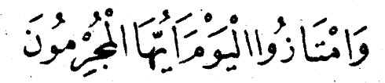

Kalplerin Keşfi / Mükaşefetül Kulub , Salih Uçan,İmam Gazali
İman ve İslâm’ın Vasıfları:
İmâm-ı Gazâli Hazretlerinin bu eseri, mevzuu itibariyle tasavvufî ve ahlâkî bir eserdir. Eşsiz bir vaaz, nasihat, öğüt ve irşat kitabıdır. Kalbleri hassas bir İslâmi hayata sevk etmeyi, oraya İslâmî yaşayışı yerleştirmeyi hedefler. Büyük bir ehemmiyeti haizdir. İçerisinde tam 111 müstakil bölüm (konu) yer almaktadır.
Tercüme: Salih Uçan
İmam Gazali
İçindekiler
5. NEFSİ YENMEK VE ŞEYTANA KARŞI KOYMAK
7. ALLAH’I UNUTMAK, FASIKLIK VE NİFAK
11. ALLAH’A İTAAT, ONU SEVMEK, RESULÜNÜ SEVMEK
14. NAMAZI HUZUR VE HUŞU İLE TAMAMLAMAK
18.Merhametli Olmanin Fazileti
23.Silâ-i Rahim ve Ana Baba Hakki
27.İbâdete Devam ve Harami terk etmek
30.Kursı – Arş – Mukarreb Melekler – Rızıklar ve Tevekkül
31.Dünyâyı Terk etmek, Onu Kötülemek
35.Allah’dan Başkasını Dost Edinmek
36.Sûr’a Üfürmek, Ürkmek, Mezarlardan kalkmak
37.Mahlûkat Arasında Verilecek Hüküm
38.Dünyâ Malinin Kötülüğünü Beyân
39.Ameller – Mizan ve Cehennem Azabim
43.Gündüzleri ve Başka Zamanları Düşünmek
46.Kabrin ve Kabir Korkusunun Açıklanması
47.Ilm’ül – Yakin, Aynel – Yakin ve Arz Günü Suâl
48.Allah’ı (C.C.) Zikretmenin Fazileti
51.Cehennem Meydâni ve Cehennem Azabı
53.Günâhtan Sakınmanın Fazileti
56.Yetime Zulüm Etmeyi Yasaklamak
57.Kibrin Kötülüğünü Belirtmek
58.Tevâyun ve Kanaatin Fazileti
60.Dünyanın Kötülüğü ve Ondan Sakındırmak
62.Müslüman Kardeşinin İhtiyâcını karşılamak
66.Cehennem ve Mizân’ın Sıfatları
67.Kibir ve Kendini Beğenmişliğin Kötülüğü
68.Yetimlere İyilik Etmek ve Zulümden Kaçınmak
72.Havaya Uymanın Kötülüğü ve Zühd
73.Cennetin Vasıfları ve Cennetliklerin dereceleri
77.Riyazet ve Keramet Ehlinin Fazileti
79.Gıybet ve Koğuculuğun Kötülüğü
81.Muhabbet ve Nefs Muhasebesi
83.Cemâat Namaz Kılmanın Fazileti
84.Gece Namaz Kılmanın Fazileti
88.Kur’ân-ı Kerim’in ve Âlimlerin Fazileti
90.Ana – Babaya iyilik ve Evlat Hukuku
91.Komşuluk Hukuku ve Fakirlere iyilik
93.Peygamberimizin (S.A.S.) Mi’râc’ı
95.Kadının, Kocası Üzerindeki Hakları
96.Erkeğin Karısı Üzerindeki Hakları
100.Bid’at ve Nefsi Arzûlara Uymanın Haram oluşu
103.Ramazân Ayı’nın Faziletleri
104.Kadir Gecesi’nin Faziletleri
106.Zilhicce’nin İlk On Gününün Fazileti
108.Fakirleri Ağırlamanın Fazileti
110.Cehennem Azâbından Kurtulmak
112.Peygamber Efendimizin (S.A.V.) Vefatı
ÖNSÖZ
Allah (C.C.)'a hamdü senâ, Resûlüllah (S.A.V.) Efendimize, Âl ve Ashâbına Salâtü selâm olsun.
Mükâşefetül Kulûb mevzuu i'tîbariyle tasavvufî bir eserdir. Mahiy-yet i'tibariyle kalbleri hassas bir İslâmi hayata sevketmeyi, oraya saf bir İslâmı hayatı dercetmeyi istihdaf eden bir eserdir. Başka bir tabirle anlatmak gerekirse Mükaşefetü'l Kulûb bir «Kalbleri ihyâ» kitabıdır. Durumlarını tesbit ve keşfedip aralıyarak, ortaya çıkararak ıslâha çalış-mayı öğreten bir eserdir. Esasen tasavvuf denince de akla ilk gelen, erbabınca, bu ma'nâ olur. Tasavvuf kalb ile meşgul olan bir ilimdir. Ma'lûmdur ki, kalb nasıl olursa dış a'zâ ve yaşayış da ona uygun bir manzara arzeder. Allah Teâlânın, her kulun kalbini günde bir kaç kere kontrol ettiği hadisinin manâsına i'tibarla tasavvufta amellerin zuhur mahalli olan kalb ele alınmıştır. Bu her İslâm âliminin, Hakka ubâdiyyete kendini adamış her âbid ve zâhidin başta ya da sonda yaşadıkları bir hayat tarzıdır. Cenâb-ı Hakkın her gün ziyaret ettiği kalb hiç şüphesiz ki temiz olmaya lâyıktır. Çünkü bu kulun, Rabbına karşı (kölenin efen-disine misali) bir edeb kaidesidir. Edebi olmayan bir kulun Rabbı yanın-da i-'tibarı olmaz. Halbuki bir köle için gaye ,efendisinin teveccühünü kazanmasıdır. Kulun saadet ve huzuru da buna bağlıdır. Bu bakımdan kalb, kalblerin keşfi ve hallerinin bilinmesi (Mükâşefetü'l-Kulûb) gayet mühimdir.
İmâm-ı Gazâli ve benzeri âlimler bugün semeresine her zaman-kinden fazla muhtaç olduğumuz kalb ile ilgili böyle bir çalışmayı asır-larca önce yapmışlar ve bu sahada eserler yazmışlardır. Ancak bu gibi âlimler böyle eserleri yazmadan önce ya da yazarlarken mevzuu bahs olan tasavvufi hayatı yaşamışlardır. İmâm-ı Gazâli bu zatların başla-rında gelir. Eserleri diğer tasavvuf erbâbına nazaran kuvvetli bir İslâm kültürünü ihtiva eder. O her tasavvufi mevzûu İslâmın başlıca kültürü olan Âyet ve hadislerle ele almıştır. Âyet ve hadise uyacak tarzda işle-miştir. Mes'eleyi İslâm kültürü ile bağdaştırmıştır. Bu bakımdan o, ilim adamları arasında diğer mevzularda olduğu gibi bu mevzuda da güven ve i'tibarca başta gelir. Okuyucu halk için de bu böyledir. Denebilir ki: Eserleri en dikkatli, en çok okunan bir İslâm âlimidir.
İmâm-i Gazâlinin her eseri hemen hemen aynı kıymeti hâizdir. O bu sahadaki her eserini ilmî bir otorite ve tasavvufî bir sâfiyetle yazmıştır. En büyük eserlerinde küçüklerinin ve en küçük eserlerinde de büyük-lerinin hulâsasını bulmak mümkündür Eserlerindeki her mevzuu ben-zerlerinden daha güzel şekilde işlemiştir. Bütün bunlar da üstün bir zekâ, yüksek bir İslâm kültürü, derin bir tasavvuf ve temiz bir İslâmi ya-şayıştan ileri gelmiştir.
H. 450/505 - M. 1058/1111 tarihleri arasında Horasan'ın (İran) Tûs kasabasının Gazâl Köyünde doğup yine aynı yerde vefat eden Huccetül İsiâm İmâm Ebû Hâmid Muhammed b. Muhammed b.muhammed ei-Ga-zâli (Rahmetullâhi Aleyh) nin ikiyüz civarında eseri bulunduğu kaynak-larda zikredilmektedir. Takdim ettiğimiz «Mükâşefetü'l Kulûb» Onun yukarıda arzettiğimiz kıymetli eserlerinden biridir.
Başta da ifade ettiğimiz gibi (Mükâşefetü'l-kulûb): Kalbin iyi ve kötü durumlarını açıklayıp bunlara karşı alınacak tedbirleri, çareleri bildirip bir Müslümanın nasıl bir hayata sahip olması gerektiğini anlat-maktadır. Merhumun her eseri gibi bu eserinin de dikkatli okunarak ona göre yaşayışı tanzim etmek gerekir. Tevfik ve hidâyet Allahtandır.
Çelik yayınevi
28 C. Evvel 1400 (14 Nisan 1980)
Peygamber'imiz (S.A.S.) buyuruyor ki:
«-Ulu Allah (C.C.), kanatlarının biri doğuya, öbürü batıya uza-nan ve ayaklan yedinci kat yere inen bir kuş yarattı. Kuşun üzerinde bütün varlıkların sayısı kadar tüy vardır.
Ümmetimden kadın - erkek herhangi bir kimse bana selât-ü selâm getirdiği zaman ulu Allah bu kuşa, Arş'ın altında bulunan nurdan bir denize dalmasını emreder. Kuş denize dalıp çıkarak kanatlarını silke-leyince her tüyünden bir damla akar. Ulu Allah akan her damladan, üzerime kıyamete kadar selât-ü selâm getiren kul hesabına istiğfar edecek bir melek yaratır.»
Ehl-i Hikmet'ten biri şöyle der:
«Vücudun selâmeti az yemekte, ruhun selâmeti az günah işlemekte ve dinin selâmeti de varlıkların en hayırlısına (Peygamber'imize) selât-ü se-lâm getirmektedir.»
Ulu Allah (C.C.) buyuruyor ki:
«— Ey iman edenler! Allah'dan korkunuz ve O'na itaat ediniz ve her-kes yarını için (kıyamet gününe ne amel işlediğine) baksın (yani sadaka verin ve Allah'ın emrine uygun ameller işleyin ki, Kıyamet günü sevabını bulasınız) Allah'dan korkunuz, çünkü O, (iyilik olsun, kötülük olsun) yap-tığınız her hareketten haberdardır» (1).
Çünkü Kıyamet günü melekler, gökler, yeryüzü, gece, gündüz, iyilik olsun, kötülük olsun insanoğlunun işlediği her şeye şahitlik edecekler-dir. Hatta vücudun azaları bile insanoğluna karşı şahit tutulacaktır.
Yeryüzü, günah işlemekten sakınarak iyiliğe koşan (zahid) ve mü-min kulun lehine şahitlik ederek «bu adam üzerimde namaz kıldı, oruç tuttu, hacca gitti, cihad etti» diyecek, günahtan sakınarak iyiliğe koşan mümin kul da bu şahitliğe sevinecektir.
Buna karşılık ayni yeryüzü, kâfir ve günahkârların aleyhinde de şa-hitlik ederek «bu adam üzerimde Allah'a şirk koştu, zina işledi, içki içti, haram yedi» diyecektir. Merhametlilerin en merhametlisi olan ulu Allah (C.C) kâfir ve günahkârları inceden inceye sorguya çekerse vay hal-lerine!
Mümin, vücudunun bütün âzaları ile Allah'dan korkandır. Nitekim büyük ahlâk ve fıkıh bilgini Ebu Leys es-Semerkandî der ki:
— Allah korkusunun, yedi alâmeti vardır:
,— Birinci alâmet dil'de belirir: Allah korkusu taşıyan kul dilini ya-landan, dedikodudan, koğuculuktan, iftiradan ve boş konuşmaktan alı-kor, bunlar yerine onu zikirle, Kur'an okumakla ve ilmî konuşmalarla meşgûl eder.
İkinci alâmet kalbde belirir: Allah korkusu taşıyan kul başkalarına karşı kalbinde düşmanlık, iftira ve kıskançlık barındırmaz. Çünkü kıs-kançlık iyilikleri mahveder. Nitekim Peygamber'imiz (S.A.S.) şöyle bu-yurur:
<<— Ateş odunu nasıl yerse (yakarsa) kıskançlık da iyilikleri öyle yer» (yok eder)
Bilesin ki, kıskançlık, kalb hastalıklarının başlıcalarından biridir ve bu hastalıklar da ancak ilimle ve iyi ameller işleyerek tedavi edilebilir.
Üçüncü alâmet göz'de belirir: Allah korkusu taşıyan kul, haram yiyeceğe, haram içeceğe, haram giyeceğe... (kısacası) haram olan hiç bir şeye bakmaz. Dünyaya aç ve muhteris gözlerle değil, ibret almak amacı ile bakar. Helâl olmayan şeylerden bakışlarını uzak tutar.
Nitekim Peygamber'imiz (S.A.S.) şöyle buyurur: «—Kim gözünü haramla doldurursa Allah da onun gözünü kıyamet günü ateşle doldurur.»
Dördüncü alâmet karın'da belirir: Allah korkusu taşıyan kul, karnına haram lokma sokmaz, çünkü haram lokma yemek ağır günahlardan biri-dir. Nitekim Peygamber'imiz (S.A.S.) şöyle buyuruyor:
— insanoğlunun karnına haram bir lokma inince, lokma midesinde kaldığı sürece yerde ve göklerdeki melekler tekrar tekrar üzerine lânet yağdırırlar O lokmayı hazmederken öldüğü takdirde varacağı yer ce-hennemdir.»
Beşinci alâmet eller'de belirir: Allah korkusu taşıyan kimse, ellerini harama değil. Allah'ın rızasına uygun şeylere doğru uzatır. Nitekim sa-habîlerden Kâ'b'ul Ahbar'ın (R.A.) şöyle dediği rivayet edilir:
<<— Ulu Allah; .her bir bölümü yetmiş bin gözlü yetmiş bin bölümü olan yakuttan yapılma bir köşk yaratmıştır. Kıyamet günü bu köşke ancak önlerine çıkan haram şeylerden Allah korkusu ile uzak duranlar girebileceklerdir.»
Altıncı alâmet ayaklarda belirir: Allah korkusu taşıyan kimse, günah işlemeye değil, Allah'ın emrine uygun ve O'nun rızasını kazandıracak işlere doğru yürür, alimlerle ve iyi amel işleyenlerle buluşmak gayesi ile adım atar.
Yedinci alâmet Amel'de belirir: Allah korkusu taşıyan kimse ibade-tini sırf Allah rızası için yapar, riyadan ve münafıklıktan kaçınır, böyle-likle Allah'ın haklarında şöyle buyurduğu kimselerden biri olur:
«— Rabb'ının katında Ahiret, günahlardan korkanlar İçindir (2). Böyleleri için Ulu Allah başka bir ayette şöyle buyurur:
<<— Günahlardan sakınanlar, hiç şüphesiz, cennetlerde ve pınar-lar(ının başların) dadırlar» (3).
Boşka bir âyette de şöyle buyuruluyor:
«— Günahlardan sakınanlar cennet ve nimetler içindedirler» (4),
Diğer bir âyette de şöyle buyurulur;
«— Günahlardan sakınanlar emin bir makamdadırlar» (5).
Bu âyetlere bakınca Ulu Allah'ın neredeyse «bu kimseler. Kıyamet günü cehennemden kurtulurlar» diye buyurduğu görülür.
Müminin korku ile ümit arasında bulunması gerekir. Buna göre bir yandan ümit kesmeksizin Allah'ın rahmetini beklerken diğer yandan ibadet hali içinde çirkin hareketlerden vazgeçerek Allah'a tevbe eder.
Nitekim ulu Allah (C.C.) şöyle buyurur:

«—Sakın Allah'ın rahmetinden ümit kesmeyin» (5).
— HİKÂYE —
Hz. Davud —-Allah'ın selâmı üzerine olsun— kürsü üzerine oturmuş, Zebûr okurken gözleri yerde sürünen kırmızı bir kurda ilişir ve içinden «Acaba Allah'ın bu kurdu yaratmaktan muradı, ne ola ki» diye düşünür. Bunun üzerine Allah'ın izni ile dile gelen kurt O'na şöyle der. «Ey Allahın Resulü! Her gün, gündüzleri bin kere — Subhanellahi velhamdülillâhi ve lâilâhe illellahu vellahu ekber (Alah'ı noksanlıkların her türlüsünden ten- zih ederim, hamd O'na mahsustur, O'ndan başka ilâh yoktur, Allah en büyüktür)» demeyi, Allah bana ilham etti. Geceleri ise yine bin kere — Ellahumme salli alâ seyyidina Muhammedininnebiyyil ümmiyyi ve alâ alihi ve sahbihi ve sellem (Allah'ım! Okuma-yazmasız Peygamberin olan Mu-hammed'e, O'nun soyundan gelenlere ve O'nun sahabilerine rahmet ve selâm ihsan eyle) dememi ilham etti. Sen zikrederken neler söylüyorsan bana da bildir de istifade edeyim,»
Bu sözleri işiten Hz. Davud (A.S.) kırmızı kurdu küçümsediğine piş-man olur, Allah'dan korkarak O'na tevbe eder ve dergâhına sığınır.
Hz. İbrahim (AS.) işlediği bir günahı hatırlayınca baygınlık geçirir ve kalbinin çarpıntısı (neredeyse) bir mil uzaklıktan duyulurdu. Allah'ın emri ile bir gün kendisine Cebrail (A.S.) gelir ve der ki, «Allah sana selâm ediyor ve —dostundan korkan bir dost gördün mü— diye soruyor.
Hz. İbrahim (A.S.) Cebrail'e şöyle cevap verir; «Ey Cebrail! Kusurum aklıma gelince ve cezasını da düşününce dostluğumu unutuyorum.»
İşte peygamberlerin, velilerin ve salihlerin tutumu budur. Ötesini var sen düşün.
_________________________________________
(1) Kur'an - Kerim/Haşr Sûresi, 18
(2) Kur'an-i Kerim/Zuhruf Sûresi, 35
(3) Kur'an-ı Kerim/Zariyat Sûresi, 15
(4) Kur'an-ı Kerim/Tur Sûresi, 17
(5) Kur'an-ı Kerim/ Duhan Sûre-i Celilesi. 51
Büyük ahlâk ve fıkıh âlimi Ebü'l - Leys es- Semerkandî (rahimehuffahu) şöyle der:
Allah'ın yedinci kat semada birtakım melekleri var ki, yaratıldıkları andan beri secdededirler. Böğürleri Allah korkusu ile devamlı titrer haldedir. Kıyamet günü başlarını secdeden kaldırarak «Ey noksanlıkların her türlüsünden berî olan Allah'ımız! Sana lâyık olduğun derecede ibadet edebilmiş değiliz» diyeceklerdir.
Kur'ân-ı Kerim'in şu âyeti, onların bu hâllerine işaret eder;
«— Üstlerindeki Rabb'lerinden korkarlar ve emrolunduklarını yaparlar (göz açıp kapayana kadar bile Allah'ın emrini kırmazlar)» (6).
Peygamberimiz (S.A.S) şöyle buyurur:
«— Kulun vücuda, Allah korkusu ile ürperdiği zaman, yaprakları dökülen ağaç gibi günahlarından sıyrılır.»
— HİKÂYE-
Adamın biri bir kadına tutulur. Günün birinde kadın bir iş için yolculuğa çıkar. Adam de peşine takılır. Kafilenin mola verdiği bir sırada yol arkadaşlarının uykuya dalmalarını fırsat bilerek kadınla başbaşa kalmayı başaran âşık ona sırrını açar, Kadın adama «bak bakalım herkes uyuyor mu» der. Bu sözü, karşı tarafın arzusuna ram olmak üzere olduğu şeklinde yorumlayarak sevince kapılan âşık derhal yerinden fırlayarak kafilenin etrafında bir tur atar. Her-kesin mışıl mışıl uyuduğunu görür. Kadının yanına dönerek «evet, herkes uyuyor» der. Bunun üzerine kadın adama «acaba Allah hakkında ne der-sin, o da mı uyuyor» diye sorar. Adam «Allah uyumaz. O'nu hiç bir zaman ne uyku ve ne de uyuklama hali yakalamaz» diye karşılık verir. O zaman kadın der ki, «insanlar bizi görmüyorsa da şu anda uykuda olmayan ve hiç bir zaman uyumayan Allah bizi görüyor. Buna göre asıl O'ndan kork-malıyız»
Kadının bu sözleri üzerine adam Allah'dan korkarak tuttuğu kötü yol-dan vazgeçer de kadının yanından ayrılır, evine döner.
Öİdüğü zaman bir tanıdığı onu rüyasında görür, «Allah sana nasıl mu-amele etti» diye sorar. Adam «Allah'dan korkarak o günahı işlemediğim için O beni affetti» diye cevap verir.
— HİKÂYE—
Zamanın birinde İsrailoğullarından biri vardı, adam kendini ibadete vermişti. Çoluk çocuk sahibi idi. Günün birinde ailece aç kalırlar. Tama-men çaresiz kaldığı için yiyecek bir şeyler bulup getirsin diye karısını dı-şarıya gönderir.
Kadın bir tüccarın evine varır, çoluk - çocuğuna yedirecek bir şeyler ister. Tüccar, kadına «olur, fakat önce bana kendini teslim et» diye teklif eder. Kadın hiç bir cevap vermeden çıkar, evine döner. Yavrularını «an-neciğim! Açlıktan öleceğiz, bize yiyecek bir şey ver» diye feryad eder du-rumda bulur.
Geri çıkarak tekrar tüccarın yanına varır, yavrularının acıklı durumu-nu anlatır. Tüccar «istediğim olacak mı?» diye sorar. Kadın «evet» der.
İkisi başbaşa kalınca kadının mafsalları (eklemleri) öylesine titreme-ye başlar ki, azaları yerlerinden çıkacak gibi olur. Tüccar «ne oluyor sa-na» diye sorar. Kadın «Allah'dan korkuyorum» diye cevap verir.
Aldığı cevap üzerine kendine gelen adam «sen şu sıkışık durumuna rağmen bu günahtan dolayı Allah'dan korkuyorsun, oysa asıl benim korkmam gerekir» diyerek yapacağı işten vazgeçer. İstediklerini vererek kadını gönderir. Kadın kucağındaki yiyecekler ile yavrularına döner. Çocukların sevinci sonsuzdur.
Bu sırada ulu Allah'dan tüccar hakkında Hz. Musa'ya (A.S.) vahiy gelir. Allah «falan, oğlu filâna bütün günahlarını affettiğimi söyle» diye bildirir;
Bunun üzerine Hz. Musa (A.S.) tüccarı bulur, ona «mutlaka Allah ile aranızda sır kalan bir hayır işlemiş olmalısın» der. O zaman tüccar kendi-sine yoksul kadınla arasında geçenleri anlatır. Hz. Musa (A.S.) «işte bu yüzden Allah, geçmiş bütün günahlarını bağışladı» diyerek tüccara müj-deyi verir (7).
Rivayete göre Peygamber'imiz (S.A.S.) demiştir ki: <<— Uıu Allah şöyle buyurur: Şu iki korku ile iki gün aynı kulumda blraraya getirmem. Dünyada benden korkanın Ahiretini emin kılarım. Bu-na karşılık dünyada iken benim korkumu yüreğinde taşımayanları Kıyamet günü korkuya düşürürüm.»
Ulu Allah (C.C.) buyuruyor:
— İnsanlardan değil, benden korkunuz» (8). Diğer bir Âyette de şöyle buyurur:
— Eğer müminseniz, onlardan değil, benden korkunuzu (9)
Hz. Ömer (R.A.) Kur'ândan bir âyet dinlediği zaman yere baygın dü-şerdi. Bir gün eline bir saman kırıntısı alarak şöyle dedi, «keski ben de bir saman kırıntısı olsaydım, adı anılmaya değer bir şey olmasaydım. Keski anam beni doğurmamış olsaydı.»
O çok ağlardı, hüngür hüngür yaş dökerdi. Bu yüzden yanaklarından süzülen yaşların bıraktığı iki siyah iz her zaman yüzünde görülürdü.
Peygamberimiz (S.A.S.) buyuruyor ki:
— Sağılan süt memeye dönmedikçe Allah korkusu ile ağlayan kimde cehenneme girmez.»
Rivayet edilir ki, Kıyamet günü bir kul Allah katına çıkılacak ve gü-nahlarının ağır bastığı görülerek cehenneme atılması emredilecektir. Bu sırgda kirpiklerinden bir tel dile gelerek şöyle diyecektir: Ey Rabb'im! Se-nin Resul'ün Muhammed «kim Allah korkusu ile ağlarsa Allah onun yaş döken gözlerini cehenneme haram kılar» diye bildirdi. Ben senin korkun-dan ağlamıştım.
Bunun üzerine dünyada Allah korkusu ile ağlayan bir kirpik teli sa-yesinde adam affedilecektir. Cebrail (A.S.) «falan oğlu filân bir tel kirpik sayesinde kurtuldu» diyerek bu durumu ilân edecektir. (10)
Rivayet edilir ki, Kıyamet günü cehennem ortaya çıkınca öylesine kükreyecek ki, bütün ümmetler dehşetinden dizüstü" kapaklanacaklardır. Nitekim ulu Allah (C.C.) buyuruyor ki:
«— ... Ve sen her ümmeti dizüstü çökmüş (ne olacağını endişe ile bekler) görürsün. Hem ümmet amel defterini almaya çağılır (11)
İnsanlar cehenneme yaklaştırıldıklarında onun öfke ve kükreyişini duyacaklar, bu kükreyiş beşyüz yıllık mesafeden duyulacaktır.
O zaman peygamberler dahil herkes kendi derdine düşerek «ben ne olacağım, ben ne olacağım» diyecektir. Yalnız peygamberlerin ulusu olan Hz. Muhammed (S.A.S.) müstesna, O «ümmetim ne olacak, ümmetim ne olacak» diyecektir.
O sırada cehennemden dağlar gibi bir ateş kütlesi çıkacaktır. Pey-gamberimizin (S.A.S.) ümmeti «ey ateş kütlesi! Namaz kılanlar, doğru-luktan ayrılmayanlar, Allah'dan korkanlar ve oruç tutanlar hakkı için geri döner misin» diye yalvararak ateşi geldiği yere göndermeye çalışacaklar, fakat ateş geri dönmeyecektir.
Bu sırada Cebrail'in (A.S.) «ateş kütlesi Muhammed'in ümmeti üze-rine yöneldi» diye seslendiği duyulacaktır. Bunun üzerine Cebrail, bir bardak su getirerek Peygamber'imize uzatacak ve «ey Allah'ın Resulü! Bu-nu al, ateşin üzerine at» diyecektir. Peygamber'imiz (S.A.S.) Cebrail'den aldığı bardağı ateşin üzerine boşaltır boşaltmaz ateş sönecektir.
Peygamber'imiz (S.A.S.) «bu su nedir? diye soracak ve Cebrail'den (A.S.) şu cevabı alacaktır: Bu senin ümmetinin, Allah korkusu ile ağla-yan günahkârlarının gözyaşıdır. Şimdi ateşin üzerine serpip onu Allah'ın izni ile— söndüresin diye sana getirme emri aldım» (12).
Peygamber'imiz (S.A.S.) şöyle dua ederdi: ,
-Allah'ım! Bana senin korkun ile ağlayan iki göz bağışla».
Gözyaşı dökmek konusunda şu beyit ne kadar düşündürücüdür:
Ey gözlerim, günahıma ağlar mısınız?
Ömrüm ellerimden uçtu, gitti de farkında olmadım.
Peygamber'imizin (S.A.S.) şöyle buyurduğu bildiriliyor:
— Hiç bîr mümin düşünülemez ki, Allah korkusu ile gözünden sinek başı kadar yaş çıksın ve elmacık kemiğine kadar insin de o kula cehen-nem ateşi değsin.»
—HİKÂYE—
Anlatıldığına göre Muhammed İbni Munzir —rahimehullahialeyh— ağladığı zaman gözyaşları ile yüzünü, sakalını ovar «duyduğuma göre göz-yaşı değen yere cehennem ateşi değmez» derdi.
Mümin Allah'ın gazabından korkmalı ve kendini nefsin azgın arzu-larına uymaktan sakındırmalîdır. Nitekim (Allah (C.C.) şöyle buyuruyor:
Nefsinin azgın arzularına uyan ve dünya hayatını (Ahirete) tercih edenlerin varacağı yer cehennemdir. Rabb'ının makamından ve nefsini azgın arzulardan alıkoyanların varacağı yer ise cennettir» (13).
Allah'ın gazabından kurtularak sevab ve rahmetine nail olmak iste-yenler, dünyanın sıkıntılarına sabırla katlanmalı, Allah'ın buyruklarına uy-makta ısrar etmeli ve günahlardan sakınmalıdırlar.
Rivayete göre Peygamber'imiz (S.A.S.) buyuruyor ki:
— Cennetlikler cennete girdikleri zaman melekler onları türlü türlü hayır ve nimetlerle karşılarlar, onlar için sedirler kurularak döşenir. Ken-dilerine çeşit çeşit yemek ve meyvalar ikram edilir.
Bu nimetlere rağmen üzerlerinde bir durgunluk farkedilir, belirli bir bekleyiş havası içinde bulundukları görülür. O zaman ulu Aüah «ey Kullarım! Burası durgun ve bekleyiş içinde olunacak bir yer olmadığı hal-de sizdeki bu durgunluk ve bekleme hali nedir» diye buyurur. Cennetlikler «bize yapılmış bir vaad vardı, şimdi zamanı geldi» diye cevap verirler.
Bu cevap üzerine Allah (C.C.) meleklere «perdeleri yüzlerinden kal-dırın» diye emir buyurur. Melekler «ey Rabb'imiz! Bunlar seni nasıl göre-bilirler, dünyada günah işlemişlerdi» derler. Meleklerin bu sözlerine kar-şılık ulu Allah emrini tekrar ederek şöyle buyurur: «Perdeleri kaldırın, on-lar dünyada iken bana kavuşmak arzusu ile zikretmişler, secde etmişler ve gözyaşı dökmüşlerdir,»
Perdeler kaldırılır ve bakarlar, ansızın Allah katında secdeye kapa-nırlar. O zaman Allah onlara «kaldırın başınızı, zira burası amel yeri değil, bağış ve mükâfat yeridir» diye buyurur. Başlarını kaldırınca keyfiyet öl-çüleri dışında onlara cemalini gösterir.
Arkasından sevinçlerini zirveye çıkarmak üzere onlara şöyle seslenir, «ey kullarım, selâm üzerinize olsun! Ben sizden hoşnudum, siz de benden hoşnud oldunuz mu?» Cennetlikler şöyle karşılık verirler, «ey Rabb'imiz! Nasıl hoşnud olmayalım ki, sen bize hiç bir gözün görmediği, hiç bir ku-lağın işitmediği ve hiç bir insanın hayalinde canlandırmadığı nimetler verdin» (14).
Bu konuda ulu Allah (C.C.) şöyle buyurur:
— Allah onlardan hoşnud oldu, onlar da Allah'dan hoşnud oldu» (15)
Diğer bir âyette de şöyle buyurur:
— Rahim olan Rabb'den selâm vardır (onlara)» (16).
Ikinci bölümün dipnotlari:
_____________________________________
(6) Kur'ân-i Kerim/Nehr Sûresi, 50
(7) Mecmu'ul Letaif
(8) Kur'an-ı Kerim/Maide Sûresi, 44.
(9) Kur'an-ı Kerim/AI-i mran Sûresi, 175
(10) Rekaik-ul Ahbar
(11) Kur'an-ı Kerim/Casiye Sûresi, 28
(12) Bidayet-ül Hidâye
(13) Kur'an-ı Kerim/Naziat Sûresi, 37-41
(14) Zehr-ur riyaz
(15) Kur'an-ı Kerim/Beyyine Sûresi, 8
(16) Kur'an-ı Kerim/Yasin Sûresi. 58
3. RİYAZET VE NEFSANİ ŞEHVET
Ulu Allah (C.C.) Hazreti Musa'ya (AS.) bildirdi ki, «Ya Musa! Eğer benim sana sözümün, diline, içinden geçenlerle ruhunun bedenine, gör-me gücünün gözüne ve işitme gücünün kulağına olan yakınlığından daha yakın olmamı istiyorsan Muhammed'e (A.S.A.) çok selât-ü selâm getir.»
Nitekim ulu Allah (C.C.) şöyle buyurur:
— Herkes yarın ne gönderdiğine (Kıyamet günü için ne amel işledi-ğine) baksın» (18)
Ey insan! Bilmelisin ki, kötülüğü ısrarla emreden nefis, sana İblis'-den daha düşmandır. Şeytan, ancak nefsin heva ve azgın istekleri yolu ile senin üzerinde baskı kurabilir. Nefsin seni aşırı emellerle ve dayanak-sız kuruntularla aldatmasın.
Çünkü gamsızlık, gaflet, vurdumduymazlık, rehavet düşkünlüğü, tem-bellik ve miskinlik nefsin karakteristik özelliklerindendir. Her zaman eğri hedefleri ileri sürer, onun her şeyi kof ve dayanaksızdır.
Ondan hoşnut olup dediğine uyarsan mahvolursun, onu bir an kont-rol ve hesabından kaçınırsan batarsın, ona karşı gelmeyi başaramayıp ar-zularına boyun eğersen seni cehenneme götürür. Hayra yöneltilemez,
belâların başı, rezilliklerin kaynağı» şeytanın hazinesi, her türlü kötülüğün sığınağıdır. Onu ancak yaratıcısı bilin Allah (C.C.) şöyle buyurun
— Âllah'dan korkunuz. Çünkü O, (iyi-kötü) yaptığınız her şeyden haberdardır» (19)
Kul, Ahiret hazırlığı yolunda kullanıp kullanmadığı nokta-i nazarından ömrünün geride kalan kısmını değerlendirse, bu düşünme ameliyesi kalb hesabına bir temizlenme fırsatı olur. Nitekim Peygamberimiz (S.A.S.) buyuruyor ki:
«— Bir saat düşünmek, bir yıllık «nâfile ve câhilâne olarak yapılan) ibadetten daha hayırlıdır» Ebu'l - Leys'in Tefsirinden böyle beyan edilmiştir.)
Aklı başında olanın geçmiş günahlarına tevbe etmesi, âhirette ken-disini kurtarıp saadete ulaştıracak şeyler üzerine düşünmesi, aşırı emelleri gemlemesi, zaman geçirmeden tevbe etmesi, Allah'ı zikretmesi, yasaklardan kaçınması, nefsine karşı direnmesi ve onun azgın arzularına boyun eğlemesi gerekir.
Nefis bir puttur, nefsine boyun eğen puta tapmış olur Allah'a ihlâsla kul olanlar, sırf O'na kulluk etmeyi başaranlar, nefislerine yenen kimselerdir.
Rivayet edilir ki, Malik İbni Dinar (rahimehullahu) bir gün Basra çar-şısında gezinirken gözü incire takılır, canı çeker. Yanında parası olmadığı için ayağındaki terliği çıkararak bakkala verir, .«karşılığında bana in-cir ver» diye teklif eder.Terliği gözden geçiren bakkal «bu hiç bir şey etmez» der. Malik de geçer, gider.
Bakkala «bu adamı tanımıyor musun» diye sorarlar, bakkal «hayır»
der, ona «bu adam Malik İbni Dinar'dır» derler.
Bunun üzerine bakkal bir tabağa incir doldurarak kölesinin başı üzerine yerleştirir ve «şu ilerde yürüyen adam bu incir tabağını senin elinden almayı kabul ederse seni âzâd edeceğim» der.
Köle Malikin peşinden koşar, yetişinçe ona «bu incir dolu tabağı
Lokman-ı Hakim demişti. «Oğlum! Uykuda ve yemekte ölçüyü ka-çırma. Çünkü çok yiyip çok uyuyanlar; Kıyamet gününe, salih amel yönün-den eli boş varırlar» Münyetil - Müthi'de böyle denilmiştir.
Peygamber'imiz (S.A.S.) buyuruyor ki:
— Çok yeyip içerek kalbi öldürmeyin. Çünkü çok sulanmış bitkinin kuruması gibi oburluk da kalbi öldürür.»
Salihlerden biri mideyi, kalbin altında kaynayan ve buharı kalbi sa-ran bir kazana benzetir, buharın çokluğu kalbi lekeler, hatta karartır.
Oburluk, anlayış ve bilgi azlığına yol açar, mide şişkinliği. zekâ kes-kinliğini giderir.
Anlatıldığına göre bir gün Yahya İbni Zekeriyya (A.S.) şeytan ile kar-şılaşır. İblisin kucağında bir tomar yular vardır. Hz. Yahya ona «bunlar nedir» diye sorar. Şeytan «bunlar insanoğullarını avlamama yarayan az-gın nefsi arzulardır» diye cevap verir.
Hz. Yahya «aralarında bana ait bir şey var mı» diye sorar. Şeytan «hayır yok, yalnız sen bir gece yemeği fazla kaçırmıştın da seni namaz-dan alakoyduk» karşılığını verir.
Bunun üzerine Hz. Yahya «öyleyse bundan sonra hiç bir zaman do-yasıya yememeye kesinlikle karar veriyorum» der. Şeytan da «o halde ben de bundan sonra hiç kimseye nasihat vermemeye kesin karar veri-yorum» karşılığını verir.
Bu durum ömründe bir gece yemeğinin ölçüsünü kaçıran içindir, bu-na karşılık ömründe bir gece bile acıkdığını hissetmeyen ve buna rağmen kendini ibadet heveslisi sayan kimsenin haline ne dersiniz?!
Yine anlatıldığına göre Yahya Bin Hz. Zekeriyya (A.S.) bir keresinde karnını arpa ekmeği ile fazlaca doyurur, o gece her zamanki zikrini ya-pamadan uykuya dalar. Allah (C.C.) O'nu vahiy yolu ile şöyle azarlar, «ey Yahya! Benim evimden daha hayırlı bir ev mi buldun, yoksa bana yakın olmaktan sana daha faydalı bir muhit mi buldun? izzet ve celâlim hak-kı için, eğer Firdevs ile cehennemin her ikisini yakından görüp mukaye-se etsen gözyaşı yerine irin ağlar ve dikişli elbise yerine demir giyerdin.»
Hz. Ebubekir (R,A\) şöyle buyurur, «Allah'a ibadet etmenin tadına varayım diye müslüman olduğumdan beri doyasıya yemedim. Allah'a kavuşmak şevki ile kanasıya içmedim. Çünkü, çok yemek, az ibadete sebep olur, insan çok yiyince vücudu ağırlaşır, gözkapaklarına ağırlık çöker, azalan gevşer. Böyle bir kimsenin elinden, kendini ne kadar zorlarsa zorlasın uykudan başka bir şey gelmez, çöplüğe atılmış bir leş gibi olur» Minlacil alezhinde böyle denilmiştir.
_________________________
(18) Kur'an-ı Kerim/-Haşr Sûresi, 18
(19) Kur'ân-ı Kerim/Haşr Sûresi, 18
4. SABIR VE HASTALIK
Allah'ın azabından kurtulmak, O'nun sevab ve rahmetine nail olarak cennetine girmek isteyenler, nefislerini dünyaya ait azgın arzulara kapıl-maktan alıkoymalı, hayatın sıkıntısı ve musibetlerine karşı sabırla katlan-malıdırlar. Nitekim ulu Allah (C.C.)
«Allah sabredenleri sever» buyuruyor. (17)
Sabır birkaç türlüdür: Allah'ın emirlerine uymakta sabretmek (sebat), Allah'ın yasaklarından uzak durmada sabretmek (direnmek), musibete, bilhassa ilk şok anının sarsıntısına karşı sabretmek (katlanmak)
Allah'ın buyruklarına uymakta (itaatte) sabır gösterenlere Allah, Kı-yamet günü cennette, her biri yerle gök arası kadar olan üçyüz derece verecektir.
Allah'ın yasaklarından uzak durmada sabır gösterenlere Allah, Kı-yamet günü, her biri yedinci yerle yedinci gök arası kadar olan altıyüz derece verecektir.
Allah'dan gelen musibetlere sabırla katlananlara Allah, Kıyamet gü-nü her biri Arş ile yeryüzü arası kadar olan yediyüz derece verecektir.
— HİKÂYE —
Anlatıldığına göre Zekeriyya (A.S.) bir gün yahudîlerden kaçar, on-lar da ardına düşerler. İz sürücüler kendisine yaklaşınca kalın dallı bir ağaç görür, «Ey ağaç yarıl da beni içine al» diye yalvarır. Bu sırada açı-lan ağaç Hz. Zekeriyya'yı gövdesine aldıktan sonra tekrar kapanır.
Derken İblis ortaya çıkar, iz sürücülerini iri gövdeli ağacın yanına ge-tirir, bir testere ile ağacı keserek Hz. Zekerriya'nın ölmesini sağlamalarını söyledi. Onlar da İblisin dediği gibi yaparlar. Hz. Zekerriyya (A.S.) Allah'a değil, ağaca sığındığı için bu yanlış tutum, helâkine yol açar ve teste-reyle ikiye bölünür.
Nitekim Peygamber'imizden (S.A.S.) gelen bir rivayette: Ulu Allah (C.C.) şöyle buyurur:
— Başına bir belâ geldiği zaman bana sığınan kulun, daha o hiç bir istekte bulunmadan, dileğini yerine getirir ve daha yalvarmadan duasını kabul ederim. Buna karşılık başına bir belâ geldiği zaman bana değil de varlıklardan birine sığınan kulun yüzüne bütün gökyüzü kapılarını kitlerim». demiştir.
(Hikâyeye devam edelim:) Testerenin dişleri beynine geçince Hz. Zekeriyya (A.S.) feryadı koparır. Bunun üzerine kendisine şöyle sesle-nilir:
—- Ey Zekeriyya! Allah sana şöyle buyuruyor: Niye belâya sabretmi-yorsun da «ah» diyorsun. Eğer bu sözü ikinci sefer tekrar edersen adını peygamberler defterinden silerim.»
Bu ağır ihtar üzerine Hz. Zekeriyya ağzından hiç bir feryad ifadesi kaçmasın diye dudaklarını ısırır, iki parçaya biçilinceye kadar sabreder.
Aklı başında, olan kimse şikâyetçi olmaksızın başına gelen belâya sabretmeli, dünya ve ahiret azabından kurtulmalıdır. Zira belâların (im-tihanların) en çetini ile peygamberler ve veliler karşılaşır.
Cüneyd-i Bağdadî (rahimehullahu Aleyh) der ki: «Belâ, ariflerin kan-dili, muridlerin uyarıcısı, müminlerin silâhı ve gafillerin helâk alma sebe-bidir. Başına belâ gelip de hoşnutluk ve sabır göstermedikçe hiç kimse imanın tadına varamaz.»
Nitekim Peygamber'imiz (S.A.S.) buyuruyor ki:
— Bir gece hastalanıp da Allah'dan gelen acıya gönül hoşnudluğu ile katlanan kimse, anasından doğduğu gün gibi günahlardan arınır. O halde hasta olduğunuz zaman iyileşmeyi temenni etmeyiniz.»
Dahhak der ki, «her kırk gecede bir başına ya bir belâ ya bir keder veya bir musibet gelmeyen kimsenin hesabına, Allah katında hiç bir hayır yazılmaz».
Muaz Îbni Cebel (R.A.) der ki, «Allah bir kulun başına bir hastalık verince sol yanındaki meleğe «çek ondan kalemi», sağ yanındaki meleğe de «bu kulumun hesabına yapageldiği amellerin en iyilerini yaz» diye ta-limat verir.
• Peygamberimiz (S.A.S.) şöyle buyuruyor:
— Bir kul hastalanınca Allah ona iki melek göndererek «bakın baka-lım, kulum ne diyor» diye talimat verir. Eğer hasta «Elhamdülillah» derse bu sözü melekler tarafından Allah'a ulaştırılır. —-O, zaten bilir ya!— O zaman Allah buyurur ki, «bu kulumun eğer canını alırsam onu kesinlikle cennete yerleştireceğim ve eğer ona şifa verirsem etini daha semiz et-terle, kanını daha daha yarayışlı bir kanla değiştireceğim gibi günahlarını da muhakkak sileceğim.»
— H İ K Â YE-
İsrailoğulları arasında bir fasık vardı, fasıklıktan bir türlü vazgeçmi-yordu, günün birinde beldesinin halkı ondan iyice bıktı, koyulduğu kötü yoldan onu vazgeçirmekten ümitler kesilince ondan kurtulmak için Al-lah'a yalvardılar.
Allah (C.C.) Hz. Musa'ya (A.S.) vahyetti ki, «İsrailoğulları arasında fasık bir delikanlı var, onu beldelerinden sür ki, onun kötülüğü yüzünden üzerlerine ateş yağmasın.»
Hz. Musa da o beldeye vararak delikanlıyı sürdü. Delikanlı beldesin-den çıkarak bir köye sığındı. Bunun üzerine Allah'dan o köyden de onu kovma emrini alan Hz. Musa, delikanlıyı yeni yurdundan da çıkardı.
İkinci sefer sürgüne çıkan delikanlı bu defa insansız, bitkisiz, vahşî hayvansız ve kuş uçmaz bir mağaraya sığındı. Bu ıpıssız mağarada yalnız, kendisi ile başbaşa kalan delikanlı çok geçmeden hastalandı, yanında ba-kacak hiç kimsesi yoktu.
Toprağın üzerine yığıldı, başını da yere koydu. Bu acıklı durumda dudaklarından şöyle mırıldandı, «Annem başucumda olsaydı, halime acır ve zilletime ağlardı. Babam yanımda olsa yardımıma koşar, başımın ça-resine bakardı. Karım burada olsa ayrılığımızın acısına ağlardı... Çocuk-larım yanımda olsalar, cenazemin arkasından gözyaşı döker ve «Al lah'ımız! Garib, zavallı, günahkâr, beldesinden yabancı bir köye sürülmüş, orada da barındırılmayacak ıssız bir mağaraya koyulmuş ve ıssız mağa-rada da dünyadan ayrılarak ümitsiz bir ahiret yolculuğuna çıkmak üzere olan babamızı sen af eyle» diye dua ederlerdi.
Allah'ım! Beni ana - babamdan, evlâdımdan, karımdan ayrı düşür-dün, fakat rahmetinden mahrum etme. Onların acısı ile kalbimi yaktın, fakat günahıma karşılık beni ateşinde yakma.
Delikanlının bu acıklı yalvarmaları üzerine Allah, delikanlıya anası ve karısı kılığında birer huri, çocuklarının kılığına girmiş genç.melekler ve ba-bası kılığında da bir melek gönderdi. Gelen huri ve melekler yanbaşına oturarak üzerine ağladılar. Delikanlı da «İşte ana-babam, karım ve ço-cuklarım, sonunda bana gelmişler!» diyerek ölçüsüz bir sevince boğuldu, gönlü feraha kavuşarak günahtan arınmış ve affa uğramış bir halde Al-lah'ın rahmetine kavuştu.
Bunun üzerine Allah (C.C.) Hz. Musa'ya (A.S.) bildirdi ki, «filân yer-deki falan kuytu mağaraya git, orada velilerimden bir veli öldü, yanına var, ona karşı yapılacak görevleri bizzat yürüterek ölüsünü defnet.»
Allah'ın bu talimatına uyan Hz. Musa (A.S.) kuytu mağaraya varınca Allah'ın emri ile önce kendi beldesinden ve sonra sürgün olarak yaşadığı köyden kovduğu delikanlının ölüsü ile karşı karşıya olduğunu ve cena-zesinin çevresini melekler ile hurilerin tuttuğunu görür.
O zaman Hz. Musa (A.S.) Allah'a «Allah'ım! Bu ölü, senin emrin uya-rınca beldesinden ve sürgün yerinden kovduğum delikanlı değil mi» diye sorar.
Ulu Allah Hz. Musa'ya cevap verir, «evet ya Musa, fakat sonra ben onu rahmetimin şemsiyesi altına alarak affettim. Çünkü toprak üzerinde uzanmış, yatarken bana yakardı. Memleket, ana - baba, eş ve çocuk has-retine katlandı. Ona son nefesinde gurbetteki acıklı durumunun elemine katılsınlar diye son nefesinde anası ve eşi kılığına birer huri, babası ve çocukları kılığında melekler gönderdim.
Bilirsin ki, bir garip öldüğü zaman yer ve gök ehlinin hepsi onun için yas tutarlar. Ben merhametlilerin en merhametlisi iken ona nasıl acımaz-dım.»
Garip bir kimse komaya girdiği zaman Allah meleklerine buyurur ki, «ey meleklerim! Bu adam gariptir, yolcudur, çoluk - çocuğundan, eşinden, ana - babasından ayrı düştü. Ölünce arkasından ağlayacak, yasını tuta-cak bir kimsesi yoktur.»
Arkasından Allah, meleklerden birini babası kılığına, bir başkasını çocuğu kılığına, bir diğerini yakın akrabasından birisi kılığına koyar.
Bunlar son nefesinde yanına varırlar. Garip hasta gözlerini açar. ana- babasını, eşini görür, yüreği rahatlar, ruhunu huzur ve sevinç içinde teslimeder.
Daha sonra cenazesi yola çıkarıldığı zaman, melekler onu uğurlar ve mezarı başında Kıyamet gününe kadar dua ederler.
İşte ulu Allah'ın (C.C.) «Allah'ın kullarına karşı lütuf sahibidir» âyet-i celilesinin tecellilerinden birisi de budur.
——İbni Ata (rahimehullahu aleyh) der ki, «Kulun gerçek mümin olup ol-madığı belâ ve ferahlıkla karşılaştığı anlarda belli olur. Ferahlık günle-rinde şükredip belâ günlerinde sızlanan kimse, (kulluk ve müminlik iddia-sında) yalancıdır.
- Eğer bir kimse bütün insanların ve cinlerin bilgisini nefsinde topla-mış olsa da üzerine doğru belâ rüzgârı estiği zaman başına gelenlerden ötürü açıktan açığa şikâyet ederse, ilminin ve amelinin ona hiç bir faydası yoktur.»
Nitekim bir Hadis-i Kudsî'de şöyle buyurulur:
— Benim takdirime razı olmayanlar ve benim verdiğime şükretme yenler benden başka bir rabb arasınlar.»
Vehb İbni Münebbih (rehimehullahu) in anlattığına göre peygamberlerden biri elli yıl Allah'a ibadet etmiş. Allah da ona «seni affettim» diye bildirmiş. Peygamber de bu bildiriye karşı «Allah'ım, hiç bir günah işlemedim ki, neyimi affediyorsun» demiş.
Bunun üzerine Allah boyun damarlarından birine hızla atmasını emretmiş, Peygamber o gece uyuyamamış. Gün ağardığı zaman sabah meleği yanına gelince boyun damarının hızlı atışından ötürü çektiği rahatsızlıktan ona yakınmış. O zaman melek ona şöyle demiş, «Allah'ın sana diyor ki, elli senelik ibadetinin sevabı boyun damarından şikâyet etmenin günahını bile karşılayamaz.»
___________________________________
(17) Kur'ân-ı Kerim/Ali îmran Sûresi, 146
5. NEFSİ YENMEK VE ŞEYTANA KARŞI KOYMAK
Aklı başında olan kimsenin, nefsin azgın arzularını açlıkla sindirmesi gerekir. Çünkü Allah'ın (C.C.) düşmanını (nefsin azgın arzularını) ancak açlık gemleyebilir.
Nefsin azgın arzuları, yemek ve içmek şeytanın vasıtalarıdır. Nitekim Peygamberimiz (S.A.S.) şöyle buyurur:
— Şeytan, insan vücudunda kan damarları yolu ile dolaşır, Binan-aleyh siz onun dolaşım yolunu açlıkla daraltınız. Kıyamet günü, insanla-rın Allah'a en yakın olanı, en uzun müddet aç ve susuz kalanıdır.»
İnsanoğlu hesabına en büyük tehlike kaynağı, midenin doyumsuz ar-zularıdır. Hz. Adem (A.S.) ile Havva'nın huzur ve istikrar yurdundan (cen-netten) çıkarılarak horluk ve yokluk diyarına (dünyaya) gönderilmeleri-nin sebebi odur.
Bilindiği gibi bir ağaç meyvesinden yemek, kendilerine Allah tarafın-dan yasaklandığı halde azgın arzularına yenilerek sözkonusu ağacın mey-vesinden yediler de çırılçıplak kalıverdiler.
Tahkike göre, mide, aşırı arzuların kaynağıdır. Hikmet ehlinden biri der ki, «nefsinin kontrolu altına giren kimse, onun azgın arzularından hoş-lanmaya mahkûm olmuş, onun yanılmalar zindanında tutuklanmış ve kal-bini faydalı şeylerden mahrunr etmiş olur. Vücud azaları toprağını azgın arzularla sulayanlar, kalblerinde pişmanlık ağacı dikmiş olurlar.»
Ulu Allah (C.C.) canlıları üç türlü yaratmıştır: Melekleri akıllı ve fa-kat azgın isteksiz yaratmıştır. Hayvanları azgın isteklerle donatmış fa-kat onların yapısına akıl katmamıştır.
İnsanoğlunu ise akıl ve arzuları birarada yapısına katarak yaratmış-tır. Buna göre aklını azgın arzularının kontrolüne veren kimse hayvan-lardan aşağıdır, bunun tersine azgın arzularını aklının kontrolü altında tutan kimse de meleklerden üstündür.
—HİKÂYE—
İbrahim Havvas (raimehullahu) anlatıyor: Bir gün Likâm dağında idim. Bir nar ağacı gördüm, canım çekti, ondan bir nar kopararak yar-dım, ekşiymiş, elimden attım ve yoluma devam ettim. Az ileride birini gör-düm, yere serilmiş ve üzerine arılar üşüşmüştü.
Adama selâm verince «aleykümselâm, ya İbrahim» diye cevap ver-di. «Beni nereden tanıyorsun» diye sordum. «Allah'ı tanıyanlara hiç bir şey saklı değildir» karşılığını verdi. Ona «anlaşılan Allah ile münasebetin var, şu arılardan seni kurtarmasını O'ndan istesene» diye takıldım.
Bana şu cevabı verdi, «ben de senin Allah ile münasebetin olduğunu sanıyordum. Asıl kendin, nar düşkünlüğünden seni kurtarmasını istesene! Nar düşkünlüğünün acısını insan ahirette çeker, oysa arı sokmasının acı-sı dünyadadır. Öte yandan arı sokması vücudu incittiği halde azgın arzu-lar, iğnelerini kalbe batırırlar.»
Bana ağır, fakat faydalı bir ders veren adamı kendi halinde bıraka-rak yoluma devam ettim.» .
Nefsin aşırı arzuları padişahları köle yaptığı gibi sabır da köleleri pa dişahlığa yükseltir. Hz. Yusuf (A.S.) sabrı sayesinde Mısır meliki oldu. Bu-na karşılık Züleyha, nefsinin azgın arzusu yüzünden, Hz. Yusuf'a (A.S.) karşı duyduğu aşkı gemleyemediği için zavallı, düşkün, yoksul, yaşlı ve gözlerinden mahrum bir duruma düştü.
Ebul Hasan Errazi'nin (rehimehullahu) anlattığına göre,ölümünden iki yıl sonra babasını rüyasında görür, üzerinde katrandan bir elbise var-dır. Ona sorar, «babacığım, niye seni cehennemliklerin kılığı içinde görü-yorum.»
Babası «yavrum, nefsim beni cehenneme sürükledi! Sakın nefsine al-danma» der.
Şairin biri bu konuda şöyle der:
Başıma dört belâ sarıldı.
Sapıklığım ve iradesizliğim yüzünden düştüm pençelerine:
Şeytan, dünya, nefsim ve sonu olmayan arzular. '
Hepsi de düşmanım, acaba kurtuluş nasıl?
İhtiras ve kuruntuların karanlığında
Nefsimin beni sonu olmayan arzulara çağırdığını görüyorum.»
. .
Hatem'ül Asam (rehimehullahu) der ki, «nefsim ayakbağım, ilmim silâhım günahım hayal kırıklığım ve şeytan da düşmanımdır. Nefsimin ar-zusuna, hiç bir zaman, uymam.»
Ehli marifetten bir zatın şöyle, dediği nakledilir: Cihad üç türlüdür. Birincisi kâfirlerle savaşmaktır ki, bu zahirî cihad'dır. Ulu Allah'ın «Allah yolunda cihad edenler...» âyet-i celilesinde, cihadın bu çeşidine işaret edilmiştir (20).
İkinci çeşit cihad ilimle ve inandırıcı deliller ile batılın taraftarlarına karşı verilen cihaddır. «En iyi usulle onlara karşı koy» âyet-i kerimesi, bu çeşit cihada işaret eder. (21)
Üçüncü çeşit cihad, kötülüğü emreden nefse karşı verilen cihaddır. Bunun hakkında Allah şöyle buyurur:
—Bizim uğrumuzda cihad edenlere yollarımızı gösteririz» (22).
Peygamber'imiz (S.A.S.) de bu konuda şöyle buyurur:
— En faziletli cihad, nefse karşı verilen cihaddır.»
Nitekim sahabîler (Allah onlardan razı olsun) kâfirlere karşı verilen bir savaştan dönünce «küçük cihaddan büyük cihada döndük» derlerdi.
Nefse, şeytana ve azgın isteklere karşı verilen cihada «büyük cihad» ismini vermelerinin sebebi şudur: Nefse ve azgın arzulara karşı verilen ci-had aralıksızdır, oysa kâfire karşı arasıra savaş verilir. Öte yandan cephe savaşçısı düşmanını görür, fakat şeytan görünmez, görünür düşmana karşı cihad vermek, görünmez düşmanla cihad etmekten daha kolaydır.
Bir de şeytana karşı savaşırken onun, senin nefsinde bir destekçi-si vardır, bu destekçi nefsin azgın arzularıdır, oysa ki kâfirlerle yapılan savaşta onların senin nefsinde öyle bir yardımcıları yoktur, bu yüzden şeytana karşı verilen cihad daha çetindir.
Yine savaşta kâfir öidürürsen zafer ve ganimet elde edersin, kâfir seni öldürürse şehitlik rütbesi ile cennet kazanırsın. Halbuki şeytanı öl-düremezsin, ama eğer o seni öldürecek olursa Allah'ın cezasına çarpı-lırsın.
Nitekim derler ki: «Savaşta atını elinden kaçıran kimse düşmanın eline düşer, buna karşılık imanını yitiren kimse Allah'ın gazabına uğrar, böyle bir şeyden Allah'a sığınırız!...»
Diğer yandan, kâfirlerin eline esir düşen kimsenin elleri boynuna bağlanmaz, ayaklarına pranga vurulmaz, aç ve çıplak bırakılmaz. Oysa Allah'ın öfkesine muhatap olan kimsenin yüzü kara olur, elleri boynuna kelepçelenir, ayakları ateşten prangalara vurulur, yediği ateş, giydiği ateş ve içtiği ateş olur.
_______________________________
(20) Kur'an-ı Kerim/Maide Suresi, 54
(21) Kur'an-ı Kerim/Nah! Sûresi, 125
(22) Kur'an-ı Kerim/Ankebut Sûresi, 69
Gaflet pişmanlığa yol açar. Gaflet nimetin elden gitmesine sebep olur. Gaflet faydalılığı engeller. Gaflet kıskançlığı azdırır. Gaflet kınan-maya ve nedamete sebep olur.
Hikâye edilir ki, salihlerden biri rüyasında hocasını görür ve ona «en çok neden pişmansınız» diye sorar. Hocası da ona «en büyük pişmanlığım gafletimdendir» diye cevap verir.
Yine anlatılır ki, salihlerden biri Zunnun-i Mısrî'yi (rehimehullahu) rüyasında görür ve ona «Allah sana ne yaptı» diye sorar.
Zunnun-i Mısrî de «beni karşısına dikerek seni gidi palavracı, seni gidi yalancı! Beni sevdiğini ileri sürdün, sonra da benden gaflete düştün diye beni azarladı» cevabını verdi.
Şair bu konuda şöyle der:
Kendin gaflettesin, kalbin yanılmada
Ömür geçti, günahlar olduğu gibi
Anlatıldığına göre salihlerden biri babasını rüyasında görür, ona «ba-bacığım! Nasılsın, durumun nasıl» diye sorar. Babası da «yavrum! Dün-yada gafil yaşadık ve gafil olarak öldük» diye cevap verir.
Zehril Riyazda rivayet edildiğine göre Hz. Yakub (A.S.) ölüm meleği (azrail) ile dosttu. Bir gün Azrail, Hz. Yakub'u ziyarete gider. Hz. Yakub O'na «Ya Azrail, görüşmeye mi geldin, yoksa canımı almaya mı» diye sorar. Azrail «gelişim ziyaret içindir» cevabını verir.
Hz. Yakub «senden bir ricam var» der. Azrail «nedir» der. Hz. Yakub «ölümümün yaklaştığını, canımı almaya hazırlandığını bana önceden bildirmeni istiyorum» der, Azrail «hay hay, sana iki veya üç haberci gön-deririm» karşılığını verir.
Hz, Yakub'un ömrü dolunca bir gün yine ölüm meleği karşısına di-kilir. Hz. Yakub yine sorar, «ziyaretçi misin, yoksa canımı almaya mı gel-din» Azrail «canını almaya geldim» cevabını verir.
Hz. Yakub «sen bana daha önce iki veya üç haberci göndereceğini söylemedin mi» diye sorar. Azrail şu cevabı verir, «söylediğimi yaparak sana üç haberci gönderdim: Önce siyah iken sonra ağaran saçın, güç-lü iken halsizleşen vücudun ve dimdik iken kamburlaşan vücudun, ey Ya-kub, işte bunlar benim ademoğullarına gönderdiğim ön habercilerdir.»
Şair bu durumu şöyle tasvir eder:
Geçti yıllar, günler, günahlar üremekte
Geldi ölüm habercisi, fakat kalb gafil
Dünyadan nasibin aldanmak ve pişmanlık
Dünyada kalman ise imkânsız ve boş kuruntu
Ebu Ali ed-Dekkak (rehimehullahu) anlatıyor: «Hasta olan salih bir dostumu ziyaret etmeye vardım, büyük bir şeyh idi, etrafını talebeleri çevirmişti, ağlıyordu, iyice yaşlanmıştı. «Ey şeyh! Neye ağlıyorsun, yok-sa dünyaya mı» diye sordum. «Asla! Kaçırdığım namazlara ağlıyorum» diye cevap verdi. «Nasıl olur, sen namazını kaçırmazdın» dedim. Bana şu cevabı verdi. «Şu günüme kadar geldim, ne gafletsiz secdeye var-dığım oldu, ns de gafletsiz secceden başımı kaldırdığım var. İşte şimdi de gaflet içinde ölüyorum.»
Arkasından derin bir nefes çekerek şu şiiri söyledi: Mezarımdan doğrulacağım günü ve mahşere varacağımı düşündüm Dört köşelik çukurumdaki ikamet süremi Yapayalnız ve tek başıma, nice izzet ve mevkiden sonra Günahımın ve toprağımın tutuklusu olarak, onunla başbaşa hesap-laşman üzerinde eni boyu düşündüm.
Ve amel defterim verildiği zamanki halimin perişanlığını
Fakat ümidim sendedir, Rabb'im, yaratıcım!
Umarım ki, ey Allah'ım sen bağışlarsın günahkârı!
Uyun-ul Ahbar adlı eserde Şakık el-Belhî'nin (rehimehullahu) şu söz-leri nakledilir: «İnsanlar şu üç sözü söylerler, ama davranışları sözleri-ne ters düşer. Birincisi «biz Allah'ın kuluyuz» derler, fakat başıboşlar gibi davranırlar, bu durum sözlerine ters düşer, «Allah bizim rızkımıza kefildir» derler, fakat kalbleri yalnız dünya ile dünya varlığı biriktirmekle tatmin olur. Bu davranış da sözlerine ters düşer. «Ölümden kurtuluş-muz yoktur» derler, fakat hiç ölmeyecekmiş gibi hareket ederler, bu du-rum da hiç şüphesiz sözlerine ters düşer.
Ey kardeşim, sen kendine bak! Hangi vücudla Allah'ın huzuruna dikileceksin, hangi dille O'na cevap vereceksin, her şeyi inceden inceye sana sorduğunda ne cevap vereceksin.
Sorulara cevap ve cevaplara doğruluk hazırla, Allah'dan kork, çünkü «O, iyi-kötü bütün davranışlarınızdan haberdardır.»
Şakık-ul Belhî sözlerine devam ederek müminlere, Allah'ın emrin-den ayrılmamalarını ve gizli - açık her durumda O'nu tek ilâh olarak bilmelerini öğütledi.
Hadisi Şerif'de varid olduğuna göre: Peygamberimiz (S.A.S.) şöyle •buyurmuştur.
— Arş'ın direğinde yazar ki, «bana itaat edenin ben de mükâfatını veririm, beni seveni ben de severim, bana yalvaranın isteğini karşıla-rım, benden af dileyenin günahlarını bağışlarım.»
Aklı başında olan kimsenin Allah'a korku içinde ve ibadetini sırf O'na yönelterek O'nun takdirinden hoşnut olarak O'ndan gelen belâya sabır-la katlanarak verdiği nimetlere şükreder ve verdiği ile yetinerek itaat etmesi gerekir.
Nitekim ulu Allah buyurur ki, «benim takdir ettiğimden hoşnut ol-mayanlar, gönderdiğim belâya sabırla katlanmayanlar, nimetlerime şük-retmeyenler ve verdiğimi yeterli bulmayanlar, benden başka Allah ara-sınlar.»
Biri Hasan el-Basrî'ye (rehimehullahu) «ibadetten zevk almıyorum» der. Hasan el-Basrî de ona «her halde sen Allah'dan korkmayan birinin yüzüne bakmışsın! Kulluk, her şeyden hakkıyla sıyrılarak Allah'a yönel-mektir» cevabını verir.
Başka birisi de aynı konuyu Ebu Yezid ol-Bestamî'ye (rehimehul-lahu) açar, «ibadetten zevk almıyorum» der. Ebu Yezid el-Bestamî de ona şöyle cevap verir. «Çünkü sen ibadete tapıyorsun, Allah'a ibadet etmi-yorsun! Allah'a ibadet et ki, ibadetten lezzet alasın.»
Anlatıldığına göre adamın biri namaza durur, «fatiha» süresini okur-ken sıra «iyyake na'budü (sırf sana kulluk ederiz)» ayetine geldiği za-man gerçekten sırf Allah'a kulluk ettiğini içinden geçirir. O sırada gizli bir ses ona «yalan söylüyorsun, sen insanlara kulluk ediyorsun» diye seslenir. Hemen tevbe eder. insanlarla münasebetlerini keser ve yine na-maza durur.
Yine sıra «iyyake na'budü» ayetine gelince ayni sesi bir kere daha duyar. «Yalan söylüyorsun, sen servetine tapıyorsun» Bu azar üzerine bütün varlığını fakirlere dağıtır, yine namaza durur, sıra yine «iyyake na'budü» ayetine geldiği zaman gizli ses bir daha kulağına gelir, «yalan söylüyorsun, sen elbiselerinin kölesisin.»
Derhal vücudunu örtmek için gerekli olanlarının dışında kalan bü-tün elbiselerini fakirlere verir ve namaza durur. Sıra bir daha «iyyake na'budü» ayetine gelince bu sefer gizli ses kulağına şöyle seslenir, «şim-di doğru söylüyorsun, gerçekten şu anda sen sırf Allah'a kulluk ediyor-sun.»
Revnakul - Meranîs de der ki: «Adamın biri heybesini kaybetmiş,
kime verdiğini bir türlü hatırlayamıyormuş, bu düşünce içinde namaza durmuş, namazda iken heybeyi kime verdiğini hatırlamış. Selâm verince kölesini çağırmış, «falan oğlu filâna git heybemizi geri al» demiş.
Köle «onda olduğu ne zaman hatırına geldi» diye sormuş, adam «na-mazda iken» diye cevap vermiş. Bunun üzerine köle ona şöyle demiş, «efendim, demek ki sen Allah'ın rızası peşinde değil, heybenin peşinde imişsin» Adam da sağlam itikadına hürmet ederek köleyi derhal azad etmiş.
Bundan dolayı aklı başında olan kimsenin dünyadan gönül sıyırarak sırf Allah'a kulluk etmesi, ilerisini düşünerek ahiret saadetini araması gerekir. Nitekim ulu Allah (C.C.) şöyle buyuruyor:
— Kim ki, Ahiret ürününü (sevabını) dilerse onun ürününü artırırız. Buna karşılık dünya ürününe (elbise, yiyecek, içecek gibi dünya lezzetlerine) talip ise ondan payını veririz, fakat onun ahirette hiç bir payı olmaz (ahiret sevgisi kalbinden çıkarılır)» (22).
Böyle olduğu içindir ki. Hz. Ebubekir (R.A.) Peygamber'imiz uğruna kırk bin dinar açıktan ve kırk bin dinar gizlice harcamış ve sonunda ken-disine hiç bir şey bırakmamıştır. Peygamber'imizin (S.A.S.) kendisi olsun, yakınları olsun dünyadan, onun azgın istek ve arzularından yüz çevir-mişlerdi.
Nitekim Hz. Fatma (R. Anha) nın Hz. Ali (kerremellahu vechehu) ile evlendiği zaman çeyizi debbağlanmış koç derisi bir post ile içine ağaç kabuğu doldurulmuş deri bir yastıktan ibaretti.
___________________________________
(22) Kur'an-ı Kerim/Şûra Sûresi. 20
Kadının biri Hasan el-Basrî'ye (rehimehullahu) gelir, «genç bir kızım vardı, öldü, onu rüyamda görmek istiyorum, onu rüyada görmeni sağla-yacak bir dua öğretesin diye sana geldim» der.
Hasan el-Basrî (rehimehullahu) da kadının arzusunu yerine getirir. Ka-dın kızını rüyasında görür ki, aman Allah'ım! Üzerinde katrandan bir el-bise, boynuna bukağu ve ayaklarına prangalar vurulmuş.
Durumu Hasan el-Basrî'ye bildirir, veli de bu hale üzülür.
Aradan zaman geçer, bu defa kızı rüyasında Hasan el-Basrî görür. Kız cennettedir ve başı taçlıdır. Kız «Veli»ye «beni hatırladın mı? Ben sa-na gelerek şöyle şöyle ricada bulunan kadının kızıyım» der.
Hasan el-Basrî «seni gördüğüm duruma getiren sebep nedir» diye sorar. Kız şu cevabı verir, «Adamın biri bizim mezarlığın yanından geçer-ken Peygamber'imize (S.A.S.) bir defa selât-ü selâm getirdi, mezarlıkta azâb çeken beşyüz elli ölü vardık. O adamın selât-selâmı sayesinde —bunlardan azabı kaldırın— diye emir geldi.»
Şimdi düşünelim. Bir adamın Peygamber'imize (S.A.S.) getirdiği se-lât-ü selâm hürmetine o kadar kişi affedilince elli yıllık ömrü boyunca O'na selât-ü selâm getiren kimsenin Kıyamet günü, O'nun şefaatine nail olmaması düşünülebilir mi?
Ulu Allah (C.C.) «o kimseler gibi (yâni münafıklar gibi) olmayın (güna-ha dalmayın) ki, onlar Allah'ı unutmuşlardır (yani Allah'ın emrinden ay-rılarak tersini yapmışlar, dünyalık azgın arzulardan tad almşlar ve onun aldatıcı görüntülerine gönül vermişlerdir).»
Peygamber'imize (S.A.S.) «mümin ve münafık kimdir» diye sormuş-lar, Peygamber'imiz şu cevabı vermiştir:
— Müminin gözü namazda, oruçta olur, münafığın gözü işe —hayvanlarda olduğu gibi-— yemekte, içmekte, ibadet ve namazdan uzak durmakta olur. Mümin, eli vardıkça sadaka verir, Allah'dan günahlarının affedilmesini diler. Münafık ise ihtiras ve boş kuruntular peşindedir. Mü-minin Allah'dan başka hiç bir kimsede umudu olmaz, münafık ise AI-lah'dan başka herkese umut bağlar.
Mümin, dini yerine malını feda eder, münafık ise malı uğruna dinini satar. Mümin Allah'dan başka hiç kimseden korkmaz. Münafık ise Allah-dan başka herkesten çekinir. Mümin iyilik işlemekle birlikte ağlar, mü-nafık ise kötülük işlediği halde güler.
Mümin yalnızlıktan ve kendi başına kalmaktan hoşlanır. Münafık ise girişkenlikten ve kalabalıktan hoşlanır.
Mümin tohum eker, (yapıcı ve üreticidir) kargaşalıktan hoşlanmaz, münafık ise yıkıcıdır, bununla birlikte emeksiz ürün peşindedir. Mümin dininin prensiplerine uygun bir idare uğruna emir verir ve yasaklar ko-yar, düzelticidir. Münafık ise baş olma ihtirası uğruna emirler verir ve yasaklar koyar, yıkıcıdır. Daha doğrusu kötülüğü emrederken iyiliği ve doğruyu yasaklar.»
Nitekim ulu Allah (C.C.) şöyle buyuruyor;
— Münafık erkekler de münafık kadınlar da biribirlerinin parçaları-dırlar (hepsi biribirine benzer) Onlar kötülüğü emrederler, iyilikten vaz-geçirmeye çalışırlar. Onlar avuçlarını yumarlar (cimridirler) Onlar Allah'ı unutmuşlardır, Allah da onları unuttu. Hiç şüphesiz münafıklar, fasıkla-rın ta kendileridirler.
Allah erkek münafıklara da kadın münafıklara da kâfirlere de içinde ebediyyen kalmak üzere cehennem ateşini. va'detmiştir. Bu onlara ye-ter. Ayrıca Allah onları rahmetinden kovdu, onlar için tükenmez azap vardır» (23).
Yine ulu Allah (C.C.) şöyle buyurur:
«— Allah münafıklar ile kâfirlerin hepsini (kâfir ve münafık olarak öldükleri takdirde) cehennemde biraraya getirecektir» (24).
Âyet-i celilede münafıkların daha önce zikredilmelerinin sebebi, bun-ların kâfirlerden daha kötü olmaları yüzündedir. Arkasından da her iki zümrenin birlikte varacağı yerin cehennem olduğunu bildirmiştir.
Yine ulu Allah (C.C.) şöyle buyuruyor:
— Hiç şüphesiz, Münafıklar cehennemin en alt katındadırlar. Onlar için hiç bir kurtarıcı bulamayacaksın» (25).
Münafık kelime manas bakımından «nafik-ul Yerbu» deyiminden tü-remiştir. Tarla faresinin yuvasında karşılıklı iki delik bulunduğu söyle-nir, birine «nafıka» diğerine «kasıa» denir. Tarla faresi birinin ucundan başını gösterir, Öbüründen çıkıp gider.
İşte münafığa o yüzden bu ad takılmıştır. Çünkü kendini müslüman-mış gibi gösterir, öte yandan İslâmdan çıkarak kâfirliğe girer.
Peygamber'imiz (S.A.S.) buyuruyor ki:
- Münafık, iki koyun sürüsü arasında gâh sürünün birine, gâh öbü-rüne katılan şaşkın bir koyun gibidir. O bu sürülerin hiç birinde devamlı barınmaz, çünkü her iki sürüye de yabancıdır. Münafık da tıpkı böyledir, ne tamamen müslümanlarla kaynaşabilir ve ne de kâfirlerle.»
Ulu Allah (C.C.) cehennemi yedi kapılı olarak yaratmıştır. Nitekim
«cehennemin yedi kapısı vardır» diye buyuruyor (26)
Bu kapılar, lânetle kaplanmış demirdendir, cehennem duvarlarının dış yüzü bakırdan ve iç yüzü kurşundandır. Tabanında azap ve tavanında öfke ve acımazlık vardır. Zemini cam, kurşun, bakır ve demir karışımıdır. Cehennemlikler üstten, alttan, sağdan ve soldan ateşle kuşatılmışlardır. Birbiri üzerinde duran katlardan meydana gelmiştir. İşte münafık-lar için bu katların en altta olanı ayrılmıştır.
Rivayete göre Cebrail'in (A.S.) gelişlerinden birinde Peygamber'imiz (S.A.S.) O'na «ya Cebrail, bana cehennemi ve onun hararet derecesini tasvir et» der. Cebrail de Peygamber'imizin (S.A.S.) isteği üzerine şun-ları anlatır, «Ulu Allah, cehennem ateşini yarattıktan sonra bin yıl bo-yunca yaktı, sonunda kıpkırmızı oldu. Arkasından bin yıl daha yaktı, ni-hayet ağardı. Daha sonra onu koyu bir kara renge bürününceye kadar bin yıl daha yaktı.
Seni hak dinle Peygamber olarak gönderen Allah adına yemin ede-rim ki, cehennemliklerin üzerlerindeki elbiselerden biri yeryüzü halkına gösterilecek olsa, hepsi ölürlerdi. Yine eğer cehennem içeceğinin bir tek kovası yervüzü sularının tamamına katılsa, tadanlar derhal ölürdü.
Ulu Allah'ın «sonra onu boyu yetmiş arşın zincire vururuz» ayetinde belirttiği zincirden bir arşın kadarı —ki o arşının uzunluğu doğu ile ba-tı arası kadardır— dünya dağlarına düşse, dağlar erirdi. Eğer aranızdan biri cehenneme girdikten sonra çıkarılarak aranıza gönderilse yeryüzün-dekiler, kokusununun keskinliğinden bayılarak ölürlerdi.»
Peygamber'imiz (S.A.S.) Cebrail'in sözünün burasında araya gire-rek «ya Cebrail, bana cehennemin kapılarını tarif et, şu bildiğimiz kapı-lar gibi midirler?» diye sordu.
Cebrail (A.S.) «hayır», Ya Rasulellah fakat birbiri üzerinde katlar ha-lindedirler. Kapıdan kapıya yetmiş yıllık mesafe vardır. Her kapının ısı de-recesi üzerindekinden yetmiş kat fazladır.
Peygamber'imiz (S.A.S.) Cebrail'e bu kapılara tekabül eden katlara kimlerin gireceğini sordu, Cebrail şöyle cevap verdi, «ismi —haviye— olan en alt katın kapısından münafıklar gireceklerdir. Nitekim ulu Allah
«hiç şüphesiz, münafıklar cehennemin en alt katindadırlar» buyuruyor (27) İsmi —cahim— olan ikinci katın kapısından Allah'a ortak koşanlar gireceklerdir. İsmi —Sakar— olan üçüncü katın kapısından yıldızlara ta-pan putperestler (sabiiler) gireceklerdir.
Adı —Lezza— olan dördüncü katın kapısından şeytan ile birlikte ona uyan ateşperestler girecektir Adı —hutame— olan beşinci katın kapı-sından yahudiler gireceklerdir. İsmi - Sair— olan altıncı katın kapısından hristiyanlar gireceklerdir.»
Cebrâil, sözünün burasında susunca Peygamber'imiz (S.A.S.) «hani yedinci katın kapısından girecek olanları söylemedin» diye sordu. Ceb-rail bu soruya Ya Muhammed «onu sorma» diye cevap verdi. Peygam-ber'imiz «söyle» diye ısrar edince Cebrail «yedinci kapıdan da senin üm-metinden tevbesiz ölen büyük günahkârlar gireceklerdir» diye sözünü ta-mamladı. Rivayete göre:
«Hepiniz teker teker oraya (cehenneme) mutlaka gireceksiniz»
mealindeki âyet-i kerime indiği zaman Peygamber'imizin ümmeti hesabı-na duyduğu korku artmış ve hüngür hüngür ağlamıştı (28).
Allah'ı tanıyan, O'nun sillesinin ve hışmının şiddetini bilen kimse O'n-dan olanca derecesi ile korkar. Anlatılan sıkıntılarla henüz karşılaşma-dan, o korkunç ve ürkütücü ev (cehennem) gözü önüne dikilmeden, per-de düşüp intikamı pek çetin olan Allah'ın (C.C.) huzuruna çıkarılmadan ve cehenneme sevkedilmeden kendine ve sapıklıklarına gözyaşı döker.
Orada nice yaşlı kimse «hey gidi yaşlılığım» diye feryad eder, nice genç «eyvah gençliğime» diye bağırır. Nice kadın da «eyvah rezillikleri-me, yazık yırtılan sır perdelerime» diye figan eder. Orada herkesin yüzü ve vücudu kapkaradır, beli bükülecektir.
Ne büyüklere saygı gösterilir, ne de küçüklere acınır, kadınlar çırıl-çıplaktır.
Allah'ım, ey bağışlayıcıların ulusu! Rahmetin sayesinde bizi ateşten ve ateşe yaklaştıracak her türlü kötülükten koru, bizi iyilerle birlikte cen-nete koy.
Allah'ım! Kusurlarımıza göz yum, başırnızdakileri güvenilir kıl. ayak sürçmelerimizden sonra dengeye kavuşmamızı nasib eyle ve huzurunda bizi rezil eyleme, ey merhametlilerin en merhametlisi.
Salât ve selâm Peygamber'imize, O'nun yakınları ile sahabîleri üze-rine olsun.
________________________________________
(23) Kur'an-ı Kerim/Tevbe Sûresi, 67-68
(24) Kur'an-ı Kerimı/Nisa Sûresi, 140
(25) Kur'an-ı Kerim/Nisa Sûresi, 145
(26) Kur'an-ı Kerim/Hıcr Sûresi, 44
(27) Kur'an-ı Kerim/Nisa Sûresi/145
(23) Kur'an-ı Kerim/Meryem Sûresi, 71
8. TEVBE
Tevbe her müslüman erkek ve kadına farzdır. Nitekim ulu Allah (C.C.) şöyle buyuruyor:
— Ey iman edenler! Dönülmez bir tevbe ile Allah'a yöneliniz» (29).
Emir vücup içindir.
Yine ulu Allah (C.C.) şöyle buyuruyor:
— Allah'ı unuttukları için Allah'ın kendilerini kendilerine unutturdu-ğu kimseler gibi olmayınız. Onlar fasıkların ta kendileridir» (30).
Ayet-i kerimedeki «Allah'ı unuttular» ifadesi, Allah'a daha önce söz vermiş oldukları halde O'nun kitabına, uymaktan cayanlar demektir, «Allah da onlara kendi kendilerini unutturdu» cümlesi de kötülüklerinden vazgeçip kendileri hesabına iyi davranışlara girişmek üzere kendi kendi-lerini değerlendirmelerini hatırlarına getirmedi demektir. Nitekim Pey-gamber'imiz (S.AS.) şöyle buyuruyor:
— Allah'a kavuşmayı dileyen kimseye kavuşmaktan Allah hoşnut olur. Buna karşılık Allah'a kavuşmaktan hoşlanmayan kimseye kavuşmayı Allah da istemez.»
«Ayetteki «onlar fasıkların ta kendileridir» ifadesi de günah işleme-yi tabiî bir yol haline getirenler, verdikleri sözden cayanlar» hidayet, rah-met ve mağfiret yolundan sapanlar demektir.
«Fasık» iki türlüdür: Biri «kâfir fasık», diğeri «facır fasık» «Kâfir fa-sıf» Allah'a ve O'nun Resul'üne inanmayan, hidayet yolundan çıkarak sa-pıklık çıkmazına koyulan kimsedir. Nitekim ulu Allah (C.C.) böylesi fasık-lar hakkında şöyle buyuruyor:
— O, Rabb'inin emrinden çıkmıştır» (31).
Yani iman ederek Allah'ın emrine uyma yolundan ayrılmıştır.
«Facır fasık»a gelince içki içen, haram yiyen, zina eden, çeşitli gü-nahlar işleyerek ibadet yolundan sapıp isyan yoluna giren ve fakat Allah'a ortak koşmamış olan kimselerdir.
Aralarında fark da şudur. Ölmeden önce tevbe edip kelime-i şaha-det getirmedikçe kâfir fasığın affedilmesi umulmaz. Buna karşılık facır fasık, ölmeden önce sadece tevbe ederek işlediklerinden pişmanlık duy-duğu takdirde affa uğraması beklenebilir.
Bilinmelidir ki, sebebi nefsin azgın arzuları olan her günahın affedil-mesi beklenebilir. Buna karşılık sebebi kibir olan günahın affı beklene-mez. Nitekim şeytanın baş kaldırmasına sebep kibri olduğu için affedil-memiştir.
Buna göre ölmeden önce günahlarından vazgeçip Allah'a tevbe et-men gerekir ki, Allah'ın dileğini kabul buyurmasını beklemeye haklı ola-sın. Nitekim ulu Allah (C.C.) şöyle buyurur:
«— Kullarından gelen tevbeferi kabul ederek kötülükleri affeden O' dur» (32).
Demek ki ulu Allah, tevbeyi kabul ederek yapılmış olan kötülükleri bağışlıyor. Nitekim Peygamber'imiz (S.A.S.) şöyle buyuruyor:
— Günahlarından tevbe eden kimse, hiç günah işlememiş kimse gibidir.»
Anlatıldığına göre adamın biri her günah işlediğinde işlediği güna-hı bir deftere yazardı. Günün birinde yeni bir günah daha işler, yaz-mak için defterini açar. Fakat günah listesinin kayıtlı olduğu sayfalarda

«o kimseler ki Allah onların kötülüklerini iyiliklerle değiştirir» mealindeki ayet-i kerimeden başka hiç bir satır bulamaz (33) Ayetten murat Allah şirkin yerine imanı, zinanın yerine affı, günahın yerine ismet ve taatı de-ğiştirir demektir.
Yine anlatıldığına göre Hz. Ömer (R.A.) bir gün Medine mahallelerin-den birini dolaşırken bir delikanlı ile karşılaşır. Delikanlı, elbisesinin al-tında içki şişesi taşımaktadır. Hz. Ömer «delikanlı, elbisenin altında ne var» diye sorar. Delikanlı az kalsın «İçki» diye cevap verecekti ki o anda içinden şöyle dua etti. «Allah'ım! Beni Ömer'in karşısında rezil etme, rüsvay etme, ayıbımı gözünden sakla, bundan sonra bir daha içki iç-meyeceğim.»
Arkasından «Ey Emirü'l - Mü'minin elbisemi altında taşıdığım sirke şi-şeşidir» diye cevap verir. Hz.Ömer «göreyim» der. Delikanlı elbisesini
kaldırır, Hz. Ömer bakar gerçekten şişe sirke olmuştur! Demek ki içki sirkeye dönüşmüştür.
Kul korkusu ile tevbe ettiği için samimiyetinden dolayı AİIah'ın içki-sini sirkeye değiştirdiğini görüyorsun. Bu böyle olunca kötülüğe batmış bir günahkâr, dönülmez bir tevbe ederek işlediği kötülüklerden vazge-çecek olsa ulu Allah onun günah içkisini ibadet sirkesine dönüştüre-cektir.
Ebu Hureyre (R.A.) anlatıyor:
Bir gece yatsı namazını Allah Rasulü ile birlikte kıldıktan sonra yola çıktım, yürürken önüme bir kadın çıktı, «ey Ebu Hureyre, ben bir günah işledim, acaba tevbem kabul olur mu» diye sordu.
«İşlediğin günâh nedir» diye sordum. Kadın «zina yaptım ve zinadan peydahladığım çocuğu da öldürdüm» cevabını verdi. Kadına «mahvoldun ve cana kıydın, yemin ederim ki, senin yapacağın tevbe kabul edilmez» karşılığını verdim, ben böyle der-demez kadın bayılarak yere düştü.
Yoluma devam ettim, yürürken içimden «Allah Rasul'ü henüz ara-mızda iken ben fetva veriyorum, bu doğru değil» dedim. Bu düşünce ile geriye döndüm, Peygamber'imize vardım, karşılaştığım olayı O'na anlat-tım.
Bana dedi ki, «mahvoldun ve kadını da mahvettin. Şu ayetler nerede, senin tutumun nerede! Ulu Allah (C.C.) şöyle buyuruyor:
— Onlar ki, Allah'ın yanına başka bir ilâh katıp tapmazlar, kesin bir adalet hükmü olmaksızın Allah'ın haram kıldığı cana kıymazlar, zina et-mezler (işte onlar Allah'ın gerçek kullarıdırlar) Kim bu haramları işlerse cezaya çarpılır.
Kıyamet günü o kimsenin azabı kat kat olur ve perişanlık içinde azab ile ebediyyen başbaşa bırakılır. Yalnız tevbe ederek salih ameller işleyen
____________________________________
(29) Kur'an-ı Kerim/Tahrim Sûresi. 8
(30) Kur'an-ı Kerim/Haşr Sûresi, 19
(31) Kur'an-ı Kerim/Kebf Sûresi, 50
(32) Kur'an-ı Kerim/Şûra Sûresi, 25
(33) Kur'an-ı Kerim/Furkan Sûresi. 70
9. SEVGİ
Anlatıldığına göre adamın biri çöl ortasında yürürken gözünün önü-ne çirkin bir yüz dikilir. Adam «sen kimsin» der. Çirkin yüz «ben senin çirkin amellerinim», diye cevap verir. Adama «senden kurtulmanın yolu nedir» diye sorar. Adam «Peygamber'e selât-ü selâm getirmektir.»
Nitekim Peygamber'imiz (S.A.S.) şöyle buyuruyor:
— Bana getirilen selât-ü selâm, sırat köprüsü üzerinde ışıktır, cu-ma günü seksen kere selât-ü selâm getiren kimsenin geçmiş seksen yıl-lık günahı affedilir» der.
Yine anlatıldığına göre adamın biri Peygamber'imize Hz. Muham-med'e selâm getirmezdi, bir gece rüyasında Peygamber'imizi (S.A.S.) görür, fakat Peygamber'imiz yüzünü adama çevirmez. Adam «ey Allah'ın Resul'ü! Yoksa bana kızgın mısın» diye sorar, Peygamber'imiz «hayır» diye cevap verir. Adam «o halde niye yüzüme bakmıyorsun» diye sorar. Peygamber'imiz «çünkü seni tanımıyorum» diye karşılık verir.
Adam «beni nasıl tanımazsın, ben senin ümmetinden biriyim, alim-lerin anlattığına göre sen ümmetini ananın çocuğunu tanıdığından da-ha iyi tanırsın» der. Peygamber'imizin cevabı şöyle olur: «Alimler doğru söylemişler, yalnız sen üzerime selât-ü selâm getirerek beni hatırlama-dın ki! Benim ümmetimi tanımam, üzerime getirecekleri selât-ü selâm ile ölçülüdür.»
Bu arada adam uyanır, ve her gün Peygamber'imize (S.A.S.) yüz ke-re selât-ü selâm getirmeyi üzerine borç haline getirir ve bunu yapar. Bir müddet sonra Peygamber'imizi yine rüyasında görür. Peygamber'imiz ona «şimdi seni tanıyorum ve sana şefaat edeceğim» diye müjde verir. Çün-ki adam Rasulüllahı sever olmuştur.
Allah (C.C.) buyurur ki: ,
«— Ey Rasulüm! De ki, eğer Allah'ı seviyorsanız, bana uyunuz da Al-
lah da sizi sevsin ve günahlarınızı affetsin. Hiç şüphesiz Allah, bağışlayı-cı ve esirgeyicidir» (34).
Ayet-i kerimenin nüzül sebebi şöyle nakledilir: Peygamber'imiz (S.A.S.) K'ab İbni Eşref ile adamlarını İslâmı kabul etmeye davet ettiği zaman on-lar da Peygamber'imize «biz Allah'ın oğulları yerindeyiz, o yüzden biz Al-lah'ı daha çok severiz» diye cevap verdiler.
Adamların bu cevabına karşılık ulu Allah (C.C.) Peygamber'in onla-ra şu mahiyette bir cevap vermesini murat etmiş olmalıdır: Eğer siz Al-lah'ı seviyorsanız, tebliğ ettiğim dini kabul ederek bana uyunuz. Çünkü ben O'nun bildirisini size ulaştıran ve sizinle ilgili hükümlerini açıklayan bir Allah Rasûlüyüm. Eğer benim O'nun adına yaptığım davete uyar-sanız, o sizi sever ve günahlarınızı bağışlar. Hiç şüphesiz O, bağışlayıcı ve esirgeyicidir.
Mü'minlerin Allah'ı sevmesi, O'nun emrine uymakla, ibadetine koş-makla ve hoşnutluğunu aramakla olur.
Allah'ın (C.C.) mü'minleri sevmesi, onlara merhametle muamele et-mesi, onları mükâfatlandırması, günahlarını bağışlaması, onlara rahmet günahtan korunma ve başarı ihsan eylemesi demektir.
İmam-ı Gazalî (rehimehullahu) «ihya-ul Ulûm ud-Din» adlı eserinde der ki, «dört şeyi yapmaksızın dört şeyi iddia eden kimse yalancıdır:
1 — Cenneti sevdiğini söylediği halde ibadet etmeyen kimse yalan-cıdır. '
2— Peygamber'imizi (S.A.S.) sevdiğini ileri sürdüğü halde alimler ile fakirleri sevmeyen yalancıdır.
3 — Cehennemden korktuğunu iddia ettiği halde günah işlemekten vazgeçmeyen kimse yalancıdır.
Nitekim Rabia-i Adviyye'nin (rahimehullaha) şu iki beyti bu noktayı güzel izah eder:
Allah'a isyan ediyorsun, oysa O'nu sever görünüyorsun
Hayatım hakkı için bu durum, mantık prensiplerini alt-üst eder.
Eğer sevgin doğru olsaydı, O'nun emirlerine uyardın
Çünkü aşık, sevgilisinin sözünden çıkmaz
Sevginin alâmeti, sevgilinin arzusuna, uymak ve onunla ters düş-mekten sakınmaktır.
Anlatıldığına göre bir gün bir gurup Şibli'yi (rahirnehullahu) ziyarete gider. Büyük Veli «siz kimsiniz» diye sorar. Gelenler «biz seni sevenle-riz» diye, cevap verirler.
Bu sırada Şiblî yüzünü onlara döner, sonra onları taşlamaya baş-lar, adamlar Veliden kaçarlar. Veli onları «benden niye kaçıyorsunuz, eğer gerçekten beni sevseydiniz, belâmdan kaçınmazdınız» diye azarlar. Arkasından sözlerine şöyle devam eder:
Muhabbet ehli, sevgi kadehinden içtiler, beldeler ve yeryüzü onlara dar geldi, Allah'ı hakkı ile bildiler, O'nun ululuk ve kudreti karşısında şaş-kın kaldılar. O'nun sevgi kadehinden içtiler, O'nun ünsiyet denizinde bo-ğuldular, yalnız O'na seslenmekten zevk alır oldular.
Arkasından şu beyti söyledi:
Ey mevlâm! Sevgini hatırlamak sarhoş etti beni
Sen sarhoş olmayan hiç bir aşık gördün mü?
Söylendiğine göre deve sarhoş olduğu zaman kırk gün yem yemez ve her zaman taşıdığının bir kaç katı kadar yük sırtına vurulsa yükle-neni taşımazlık etmez. Çünkü kalbinde sevgilisinin hatırası kıpırdayınca artık ne yem yer ve ne de ağır yük taşımaktan kaçınır, sebep sevgilisine karşı duyduğu şevktir.
Deve deve iken sevgilisi uğruna nefsinin isteğini gemleyerek ağır yük taşımaya katlandığı halde siz Allah için hiç bir yiyecek veya içecek-ten vazgeçtiğiniz oldu mu? Allah (C.C.) için üzerinize herhangi ağır bir yük aldınız mı? Bu sayılan iyi amellerden hiç birini yapmamışsanız, si-zin Allah sevgisi iddianız ne dünyada ne de Ahirette ne insanlar gözün-de ne Allah katında hiç bir şeye yaramayan boş bir sözden ibarettir.
Hz. Ali (kerremellahu veçhehu) şöyle der:
— Cenneti seven kimse iyiliklere koşar. Cehennemden korkan kim-se, Nefsini aşırı arzulardan alakor. Ölümün kaçınılmazlığına inanan kim-senin gözünde dünyalık hazlar önemsizleşir.
İbrahim el-Havvas'a (rehimehullahu) «muhabbet nedir» diye sorar-lar. Şu cevabı verir; «İstekleri yoketmek, bütün hacet ve sıfatları yakmak ve kulun kendisini işaretler denizinde boğulmasıdır.»
(34} Kur'an-ı Kerim/Al-i İmran Sûresi, 31
«Sevgi» canlı varlığın, haz veren bir nesneye karşı meyil duyması-dır. Söz konusu meylin pekişip güçlenmesi haline «aşk» denir.
Aşk duygusu, aşkın sevgilisine kul olması ve sahip olduğu her şeyi uğrunda feda etmesine yol açacağı bir dereceye varabilir.
Züleyha'nın Hz. Yusuf'a (A.S.) karşı duyduğu aşkın ne dereceye var-dığına bir baksana! Kadının bütün servet ve güzelliği bu uğurda gitmiş. Yetmiş deve yükü mücevher ve gerdanlığının var olduğu söylenir, hepsi-ni Hz. Yusuf'un (A.S.) aşkı uğruna harcamış, «Bu gün Hz. Yusuf'u gör-düm» diyen herkese eline geçeni zengin edecek değerde bir mücevher vere vere elinde hiç bir şey kalmamış.
Aşırı aşkından dolayı diğer her şey aklından çıktığı için karşılaş-tığı her şeyi «Yusuf» diye çağırır olmuş, o kadar ki, başın göğe kal-dırdığı zaman Hz. Yusuf'un (A.S.) adını yıldızların üzerinde yazılı görür-müş.
Rivayete göre Züleyha iman edip Hz. Yusuf (A.S.) onunla evlendik-ten sonra eski aşığı ve yeni kocasından ayrı yaşamaya yönelerek kendi-sini ibadete vermiş, varlığını tamamen Allah'a adamış. Hz. Yusuf (A.S.) kendisini gündüz yatağa çağırsa «akşama» diye savar, akşam çağırınca da «yarına» diye ertelermiş.
Nihayet bir gün Hz. Yusuf'a (A.S.) demiş ki, «ben sana Allah'ı tanı-madan önce aşık olmuştum, fakat O'nu tanıyınca kendisine karşı duydu-ğum muhabbet, diğer her şeyin sevgisini gönlümden giderdi. O'nun sev-gisine bedel istemiyorum.»
Hz. Yusuf Züleyha'nın bu sözlerine şöyle karşılık verdi, «seninle bir-leşmemi emreden ulu Allah'dır. Senden iki çocuğumuz olacağını ve bun-ları Peygamber olarak görevlendireceğini bana bildirdi.»
Bunun üzerine Züheyla, «Allah sana böyle emrettiğine ve beni de
böyle bir neticeye vesile olarak seçtiğine göre Allah'ın emri başım üze-rine!» demiş. Bundan sonra ancak kendini Hz. Yusuf'a (A.S.) teslim et-miştir.
«Leylâ ile Mecnun'un aşk hikâyesini herkes duymuştur» Mecnuna adın nedir diye sorarlar, «Leylâ» diye cevap verir. Bir gün yine Mec-nuna «Leylâ ölmedi mi» derler. «Hayır, Leylâ kalbimde yaşıyor ölmedi, Leylâ benim» diye karşılık verir.
Yine bir gün Mecnun, Leylâ'nın evi önüne gider ve gözlerini gök yü-züne diker. Ona «ey Mecnun, gök yüzüne değil, Leylâ'nın odasının du-varına bak, belki onu görürsün» derler. O böyle diyenlere «gölgesi Ley-lâ'nın evine düşen yıldız bana yeter» diye cevap verir.
Anlatıldığına göre Hallac-ı Mansur'u (rehimehullahu) seksen gün hap-setmişler, İmam-ı Şiblî (rehimehullahu) bir gün ziyaretine gitmiş ve «ey Mansur, Muhabbet nedir» diye sormuş. Mansur «bu soruyu bana bugün değil, yarın sor» demiş. Ertesi gün olunca Mansur'u zindandan çıkarır-lar, ve üzerinde boynunu vurmak üzere yere yaygı yayarlar, bu sırada İmam-ı Şibli çıka gelerek karşısında dikilir. Bu anda Mansur ona sesle-nir, «ey Şiblî! Sevginin başı yangın, sonu ise ölümdür.
Hallac-ı Mansur'un nazarında Allah'dan başka her şeyin batıl oldu-ğuna kesin kanaat gelince ve yalnız Allah'ın hak olduğunu bilince, hak isminin onun kendi adı olduğunu unutmuş ve sen kimsin sorusuna muha-tap olunca «ben hakkım» diye cevap vermiştir.
Anlatıldığına göre sahici muhabbet, şu üç davranışta belli olur:
1 - Aşık, sevdiğinin sözünü diğerlerinin sözlerine tercih eder.
2 — Aşık, sevgilisi ile oturup kalkmayı başkaları ile birarada olma-ya tercih eder.
3 — Yine aşık, sevgilisinin rızasını kazanmayı, başkalarının hoşnut-luğunu elde etmeye tercih eder. (El Münteha - Nam Kitapta da böyledir.)
Söylendiğine göre «aşk» perdeyi yırtmak ve sırları keşfetmektir. «Vecd» hali ise zikrin lezzetine varıldığı anda ruhun, arzunun taşkınlığı-na katlanamamasıdır, öyle ki, bu hali yaşayan kimsenin azalarından biri kesilse hiç bir şey duymaz.
Anlatıldığına göre adamın, biri Fırat nehrinde yıkanıyormuş, bu ara-da:

«ey günahkârlar! Bugün seçiliniz» mealindeki âyet-i kerimeyi okuyan bir adamı duymuş (35). Ayetin içine saldığı dehşetin etkisi ile çırpınmaya başlamış ve sonunda boğulmuş ve ölmüş.
Muhammed İbni Abdullah el-Bağdadî (rehimehullahu) diyor ki, «Bas-ra şehrinde iken bir gün yüksek bir çatıya çıkmış bir delikanlı gördüm, yüzünü halka dönmüştü, şöyle diyordu: «Aşık olarak ölen kimse işte böy-ledir. Uğrunda ölüm olmayan aşkın hiç bir değeri yoktur.»
Bu sözlerin arkasından kendini boşluğa attı. «manzarayı hayretle seyreden halk» tarafından «ölüsü» alıp götürüldü.
Cüneydül Bağdadî (rehimehullahu). «Tasavvuf, ihtiyarı terketmektir» demiştir.
Hikâye edildiğine göre Zünnun'ül Mısrî (rehimehullahu) bir gün Mes-cid-i Haram'a girer, sütunlardan birinin altında çırılçıplak, yerde yatan hasta bir delikanlı görür, delikanlı yanık bir sesle inlemektedir. Bundan sonrasını Şeyh'in kendisinde dinleyelim:
«Yanına sokuldum, selâm verdim ve «ey delikanlı, sen kimsin» diye sordum. «Ben aşık bir garibim» diye cevap verdi. Ne demek istediğini anlamıştım, «ben de senin gibiyim» dedim.
Bu sırada ağlamaya başladı, onun ağlaması beni de ağlattı. Bana «sen de mi ağlıyorsun» diye sordu, «ben de senin gibiyim» diye karşılık verdim. Bunun üzerine daha yüksek bir sesle ağlamaya başladı ve gür, yüksek bir nara attı, hemencecik ruhunu teslim etti.
Elbisemi üzerine örttüm, kefen bulmak için yanından ayrıldım, kefen satın alıp dönünce onu yerinde bulamadım. Şaşkınlık içinde «sübhanel-lah» dedim. Bu sırada kulağıma gizli bir ses geldi, şöyle diyordu: «Ey Zün-nun! O öyle bir garibdir ki, onu dünyada şeytan aradı, bulamadı. Malik aradı/bulamadı, cennette Rıdvan aradı, o da bulamadı.» «O nerededir?» diye seslendim. Kulağıma şu cevap geldi: «Samimî muhabbeti, çok iba-det etmesi ve hatasından derhal tevbe etmesi sayesinde Muktedir Mâ-lik'in (ulu Allah'ın) yanında sadakat koltuğundadır (36).
Şeyhlerden birine «Allah'ı seven nasıl olur, alâmetleri nelerdir» di-ye sormuşlar, şu cevabı vermiş: «İnsanlarla az münasebet kurar, zama-nının çoğunu kendisi ile başbaşa geçirir, devamlı düşünme halindedir, çok az konuşur, bakar fakat görmez, çağrıldığında duymaz, kendisine söyleneni anlamaz, başına gelen belâya üzülmez, acıktığını hissetmez, vücudunun bir yeri çıplak kalsa farkına varmaz, kendisine ağır söz söy-lense korkmaz.
Yalnızlığında Allah'a nazar eder. O'nunla ünsiyet kurar, O'na yal-varır. Dünya ehliyle dünya işleri için hiç bir tartışmaya girişmez.
Ebu Türab al-Nahbaşî (rehimehullahu) Allah sevgisinin alâmetleri hak-kında şu beyitleri söylemiştir:
«Sakın aldanma! Sevenin alâmetleri vardır.
Onun üzerinde sevgili tarafından armağan edilmiş nişanlar vardır.
Bunlardan biri ondan gelen belâdan haz duymasıdır.
Onun her yaptığına sevinmesidir.
Ondan gelen yokluk, makbul bir hediyedir.
Yoksulluk ise bir ikram, bir geçici ihsandır.
Delillerden biri, onun kararlı görmedir.
Sevgilisine itaat hususunda bütün kışkırtıcı kınamalara rağmen
Delillerden biri güler yüzlü görünmesidir.
Kalbinde sevgiliden gelen heyecan kaynaşır
Delillerden biri anlayışlı görünmesidir
Nazarında sevgi sahibi olan bir soranın sözüne karşı
Delillerden biri de tedirgin görünmesidir
Söylediği her sözü tartarak konuşan.
Nakledildiğine göre Hz. İsa (A.S.) bir gün bahçe sulayan bir delikan-lı ile karşılaşır. Delikanlı Hz. İsa'ya «Rabb'inden, sevgisinin zerre ağırlığın-daki bir kısmını bana bağışlamasını dile» der. Hz. İsa ona «sen zerre ka-darına dayanamazsın» diye karşılık verir. Delikanlı «o halde zerre kadarı-nın yarısını versin» der. Bunun üzerine Hz. İsa onun için «ya Rabb'i! bu gence sevginin zerre kadarının yarısını bağışla» diye dua eder ve yolu-na devam eder.
Epeyce bir müddet sonra Hz. isa'nın (A.S.) yolu yine oraya düşer, delikanlıyı sorar, «delirdi, dağlara çıktı» derler. Hz. İsa delikanlıyı ken-disine göstermesi için Allah'a dua eder. O sırada delikanlıyı dağlar ara-sında görür; onu gözlerini gök yüzüne dikmiş ve bir kaya üzerinde dim-dik ayakta dururken bulur.
Hz. İsa (A.S.) delikanlıya selâm verir, selâmını almaz, «ben İsa'yım» diye kendisini tanıtarak delikanlının ilgisini çekmeye çalışırken ulu Allah'-dan kendisine şu vahiy gelir: Kalbinde benim sevgimin yarım zerresini taşıyan kimse insanoğlunun sözünü hiç duyar m»? İzzet ve celâlim hak-kı için sen onu testere ile ikiye biçsen onun acısını bile duymaz.»
Üç şeyden kendini kurtarmaksızın şu üç şeyi iddia eden kimse al-danmıştır:
1 — Dünyayı sevmesine rağmen Allah'ı zikretmekten lezzet aldığını söyleyen kimse,
2 — İnsanları pohpohlamayı sevdiği halde amelde ihlâsı sevdiğini id-dia eden kimse,
3 —Nefsinin burnunu kırmaksızın Allah'ı sevdiğini ileri süren kimse
Peygamber'imiz (S.A.S.) şöyle buyuruyor:
— Öyle bir gün gelecek ki, ümmetim beş şeyi unutarak beş şeyi se-vecektir:
1 — Dünyayı sevecek, ahireti unutacaklardır.
2 _ Malı sevecekler, fakat ahiret günü hesaplaşmasını unutacak-lardır.
3 — Mahlukatı sevecekler, yaratıcıyı unutacaklardır,
4 — Günahları sevecekler, tevbeyi unutacaklardır.
5 - Köşkleri sevecekler, mezarları unutacaklardır.
Mansur İbni Ammar (rehimehullahu), bir delikanlıya öğüt verirken ona der ki, «ey delikanlı! Gençliğin seni aldatmasın. Boş kuruntulara dala-rak tevbe etmeyi hep ileriye bırakan ve öleceğini düşünmeyen nice genç vardır ki» «Yarın, ya da öbür gün tevbe edeceğim» diye cevap verir. Oy-sa tevbeye sıra getirmeden ölüm meleği ona geliverir ve kabrin boşluğu-na yuvarlanır, artık orada ona ne malın, ne kölenin, ne çoluk-çocuğun ve ne de ana-babanın bir faydası vardır.
Nitekim ulu Allah (C.C.) şöyle buyuruyor:
— Ne malın ve nede çoluk-çocuğun fayda vermediği gün. Yalnız Allah'a temiz kalb ile gelen müstesna» (36).
Allah'ım! Bize ölmeden evvel tevbe etmeyi nasib eyle, gaflette iken bizi ikaz buyur ve elçilerin önderi olan Peygamber'imizin şefaatinden fay-dalanmamızı müyesser eyle.
Müminin özelliği, günah işler-işlemez hemen o gün, hatta o anda tevbe etmesi, işlediği kusura karşı pişmanlık duyması, dünyadan azık edecek kadar bir paya razı olarak onun ile oyalanmaması, kendini ahiret için amel etmeye vermesi ve Allah'a ihlâs içinde ibadet etmesidir.
Anlatıldığına göre münafık ve cimri bir adam varmış, karısına hiç kimseye sadaka vermeyeceğine dair yemin verdirmiş, aksi halde boşa-yacağını söylemiş.
Günün birinde kapıya bir dilenci gelmiş ve «ey hane halkı! Allah hakkı için bana bir şey verir misiniz,» diye seslenmiş, kadın da dilenci-ye üç çörek vermiş, dilenci yolda münafıkla karşılaşmış, adam «bu çö
rekleri sana kim verdi» diye sormuş, dilenci de «işte şu evin hanımı» di-ye cevap vermiş, dilencinin tarif ettiği ev, kendi eviymiş.
Münafık koca öfke ile eve girmiş ve karısına sen «hiç kimseye bir şey vermeyesin diye yemin etmedin mi» diye bağırmış. Kadın «Allah için verdim» diye cevap vermiş.
Adam kalkmış, tandırı yakmış ve tam kızınca karısına «kalk, kendini Allah için şu tandıra at bakalım» diye emretmiş. Kadın kalkmış ziynetleri-ni almış Münafık ziynetlerini bırak» diye bağırmış, kadın «seven sevgi-lisi için süslenir, ben sevgilimi ziyaret etmeye gidiyorum» diyerek yeni el-biselerini giymiş olarak kendini kızgın tandıra atmış, adam da kapağını kapatarak oradan uzaklaşmış.
Aradan üç günün geçmesi üzerine münafık, tandırın başına gel-miş kapağını kaldırınca kadının Allah'ın izni ile yanmadan içerde sapa-sağlam durduğunu görerek şaşkına dönmüş, o sırada gizliden kulağına şöyle bir ses gelmiş, «ateşin sevdiklerimizi yakmadığını bilmiyor muydun?»
Nakledildiğine göre Firavun'un karısı Asiye kocasından gizli olarak iman etmiş, imanını saklıyormuş. Fakat Firavun sonunda durumu öğ-renince, ona işkence edilmesini emretmiş, çeşit çeşit işkencelerden ge-çirildikten sonra Firavun ona «imanından dön» diye teklif etmiş, fakat Asiye dönmemiş.
Bunun üzerine Firavun bir tomar kazık getirtmiş, bunlarla Asiye'nin vücudunun çeşitli yerlerine vurmuşlar sonra. Firavun karısına bir daha «dininden dön» diye teklif etmiş. Asiye ona şöyle cevap vermiş, «senin zorbalığın ancak benim nefsime hükmedebilir, kalbim ise Allah'ın hima-yesindedir. Beni kıymık kıymık doğrasan bile sadece Allah'a karşı duy-duğum sevginin artmasına sebep olabilirsin.»
Derken Hz. Musa (A.S.) Asiye'nin yanma varmış, Asiye onu görün-ce «ey Musa! Söyle bana, Rabb'im benden hoşnut mu, yoksa bana kızgın mı?» diye seslenmiş. Hz. Musa ona şu cevabı vermiş, «ey Asiye! Göklerin melekleri senin yolunu gözlüyor, yani hepsi senin özlemini çekiyor, ulu Allah seninle iftihar ediyor, ne istiyorsan bana söyle, mutlaka yerine ge-tirilecektir.»
Bunun üzerine Asiye şöyle dua etmiş, Asiye'nin bu duası Kur'an-ı ke-rimde Allah tarafından bize nakledilmektedir. Ulu Allah şöyle buyuruyor:
<<—EyRabb'im! Bana Cennette senin yanında bir ev yap. Beni Fira-vundan ve onun amelinden kurtar. Beni zalimler gürühundan kurtar» (37).
Selman-ı Farisî'den (R.A.) rivayet edildiğine göre Firavu'nun karısı Asiye'ye uygulanan işkencelerden birisi de kızgın güneş altında yanmaya bırakılması idi» fakat işkenceciler çekilip gidince, melekler onu kanatları-nın gölgesi altına alırlardı, bu sırada cennetteki evini görürdü.
Hz. Ebu Hüreyre'den (R.A.) rivayet edildiğine göre Firavun, karısı Asiye için yere dört kazık çakmış, kadını bunların üzerine yatırmış, göğ-sünün üstüne bir değirmen taşı bindirerek bu durumda onu kızgın güneşe doğru çevirip yanmaya bırakmış. Asiye bu halde iken başını göğe kal-dırarak az önce naklettiğimiz ayetteki dua ile Allah'a seslenmiş ve «Ey Rabbim bana cennette senin yanında bir ev yap...» demiş.
Hasan-ül Basrî (rahimehullahu) der ki, «Allah O'nu en şerefli bir şe-kilde kurtararak cennete çıkardı. O orada yer, içer.» Bundan anlaşıldığına göre Allah'a (C.C.) sığınmak, O'ndan yardım dilemek, sıkıntı ve belâ anın-da O'ndan kurtuluş istemek salihlerin bir geleneği ve müminlerin bir gö-reneğidir.
(35) Kur'an-ı Kerim/Yasin Sûresi, 59
(36) Zehr-ur Riyaz
(36) Kur'an-ı Kerim/Şuara Sûresi, 88—89
(37) Kur'an-ı Kerim/Tahrifti Sûresi. 11
Ulu Allah (C.C.) buyuruyor:
— De ki, «eğer Allah'ı seviyorsanız, bana uyunuz ki, Allah da sizi sevsin» (38).
Allah'ın rahmeti üzerinde olsun, bil ki, kulun Allah'ı ve O'nun Resul'ü-nü sevmesi, onlara boyun eğmekle, onların emrine uymakla olur. Allah'ın kullarını sevmesi de onlara mağfiret suretiyle ikramda bulunmasıdır.
Denilir ki, kul gerçek kemâlin yalnız Allah'da olduğunu, kendisine ve-ya başkasında gördüğü her kemâlin gerçek kemalin Allah'dan ve Allah sayesinde olduğunu bilince ne Allah'dan başkasını sevebilir ve ne de Allah'a dayanmayan bir sevgiye gönlünde yer verebilir.
Bu bilgi de Allah'a ibadet etmek isteğini, O'na yaklaştıracak davra-nışları arzu etmeyi gerektirir. Böyle olduğu için Allah sevgisi, ibadet is-teği ile yorumlanmış ve yine bu sevgi ibadet ederken Peygamber'imize (S.A.S.) uyma ona itaate teşvik şartına bağlanmıştır.
Hasan el-Basrî'den (rehimehullahu) rivayet edildiğine göre Peygam-ber'imizin (S.A.S.) zamanında bir takım kimseler «ey Muhammed! Biz Rabb'imizi çok severiz» demeleri üzerine yukarıdaki ayeti kerime inmiştir.
Bişr el-Hafi (R.A.) diyor ki, «bir gece Peygamber'imizi (S.A.S.) rü-yamda gördüm, bana dedi ki, «ey Bişr! Allah senin dereceni arkadaşların arasında neden yüksek kıldı, biliyor musun? «Hayır, ya Rasulellah» diye cevap verdim. Bunun üzerine Peygamber'imiz, salihlere hizmet ettiğin için, mümin kardeşlerine nasihat ettiğin için, dostlarını ve yolumdan ay-rılmayanları sevdiğin için ve yolumdan gittiğin için» diye kendi sorusuna cevap verdi. Peygamber'imizi (S.A.S.) buyuruyor ki:
— Benim sünnetimi ihya eden beni sevmiş olur, beni sevenler de Kıyamet günü cennette benimle birlikte olurlar.»
Bize kadar intikal eden bütün meşhur islâmî eserlerde belirtildiğine göre ahlâkın bozulduğu ve halkın çeşit çeşit mezheplere kapıldığı zaman-larda Resullerin efendisi olan Peygamber'imizin sünnetine sımsıkı sarı-lanlara yüz şehidin ecri verilecektir. Meşhur «Şırat-ül İslâm» adlı kitab-da da böyle yazar.
Yine Peygamber'imizi (S.A.S.) şöyle buyurur:
— Bana yüz çevirenler müstesna, ümmetimin hepsi cennete gire-cektir» Sahabîler sordular, «ey Allah'ın Resul'ü! Yüz çevirenler, kimler-dir?» Peygamber'imiz sözlerine şöyle devam etti, «kim bana uyarsa cen-nete girecek, bana isyan edenler, bana yüz çevirmişler demektir. Sünne-time uygun olarak yapılmayan her iş, isyandır.»
Ehl-i tasavvuftan biri der ki Allah'ın-farz, kıldığı ibadetlerden birini bile bile terkeden veya sünnetlerden birine bilerek uymayan bir şeyhi ha-vada uçarken, denizde yürürken, ateş yerken veya daha başka olağan-üstü davranışlar gösterirken görseniz, bütün bunlara rağmen adamın da-vasında yalancı olduğunu, gösterdiği olağanüstülüklerin «keramet» de-ğil, olsa olsa «istidrac» olduğunu biliniz. Allah böyle kimselerden cüm-lemizi korusun.
Cüneyd ül-Bağdadî (rehimehullahu) der ki, «Allah'a ancak yine Al-lah'ın sayesinde ulaşılabilir, Allah'a ulaşmanın yolu da Peygamber'imizin (S.A.S.) yoludur.»
Ahmed ül-Hıvarî (rehimehullahu) der ki, «sünnete uymaksızın işlenen her amel batıldır. Nitekim Peygamber'imiz (S.A.S.) şöyle buyurur:
Şiratül islâmda bildirilmiştir.
— Sünnetimi yozlaştıranlar şefaatimden mahrum kalırlar.»
Hikâye edildiğine göre, adamın biri bir delinin cahil sayılacak bir işi-ni görür ve durumu Ma'ruf ul-Kerhî'ye (rahimehullahu) bildirir. Ma'ruf gü-lümseyerek der ki. «kardeşim! Allah'ı sevenler içinde küçüğü, büyüğü, akıllısı, delisi vardır. Senin gördüğün bu adam, onların delilerinden biri-dir.»
Cüneyd-ül Bağdadî (rehimehullahu) der ki, «bir gün şeyhimiz Sırri (rehimehullahu) hastalandı, hastalığının ne sebebini anlayabildik ve ne de nasıl tedavi edileceğini bilebildik.
Bize mütehassis bir doktor tavsiye ettiler,şeyhin idrarını bir şişeye koyarak ona götürdük, doktor idrara uzun uzadıya baktı. Sonra bize dö-nerek «zannederim bu idrar aşık birine ait olsa» dedi. Ben bir nara ko-yuvererek bayılmışım, idrar şişesi de elimden düşmüş.
Dönünce Sırrîye durumu anlattım, gülümseyerek «Allah canını al-masın, nasıl da gördü!» diye cevap verdi. «Şeyhim, demek ki, muhabbet idrardan bile belli olurmuş» dedim, bana «tabii» karşılığını verdi.
Fudayl (rehimehullahu) der ki, «sana, Allah'ı seviyor musun, diye sordukları zaman, sus. cevap verme. Çünkü eğer, hayır, diyecek olsan imandan çıkarsın, buna karşılık, evet, diyecek olsan ve Allah'ı sevenlere yakışmayacak tavsif de bulunsan Allah'ın gazabından kork.»
Süfyan (rehimehullahu) der ki. «Allah'ı sevenleri seven kimse as-lında Allah'ı seviyor demektir. Allah'a ikram eden kimselere ikram eden kimse, aslında Allah'a ikram ediyor demektir.»
Sehl (rehimehullahu) der ki, «Allah'ı sevmenin alâmeti Kur'an-ı ke-rimi sevmektir. Allah ve Kur'an sevgisinin alâmeti ise Peygamber (S.A.S.) sevmektir. Peygamber (S.A.S.) sevgisinin alâmeti ise sünneti sevmektir. Sünneti sevmenin alâmeti ise, Ahireti sevmektir. Ahireti sevmenin alâmeti ise dünyadan hoşlanmamaktır. Dünyadan hoşlanmamanın alâmeti de Ahiret azığı olabilecek kadarının dışında onun varlığından uzak dur-maktır.»
Ebul Hasan ül-Zencanî (rehimehullahu) der ki. «İbadet binasının te-meli üç direk üzerinde oturur. Göz, kalb ve dil. Gözün ibadeti, ibret al-makladır. Kalbin ibadeti, düşünmek ve duymakladır. Dilin ibadeti ise doğru konuşmak ve Allah'ı zikretmekle olur. Nitekim ulu Allah şöyle bu-yurur
— Ey iman edenler! Allah'ı çok çok zikrediniz. O'nu sabah - akşam noksan sıfatlardan tenzih ediniz.» (39).
Anlatıldığına göre bir gün Abdullah ile Ahmed İbni Hab bir yerde bir-likte bulunuyorlardı. Bu arada Ahmed İbni Hab yerden bir ot kopardı. Bu-nun üzerine Abdullah ona dedi ki. «bu hareket sana beş şeye mal oldu
1 — Bu hareketle kalbini Allah'ı teşbih etmekten alıkoydun.
2 —- Bu hareketle kendini Allah'ın zikrinden başka bir işle oyalan-maya alıştırdın.
3 — Bu hareketinle başkalarının da aynı davranışta bulunmalarına önayak oldun.
4 — O ot parçasını Allah'ı teşbih etmekten alıkoydun.
5 — Bu hareketinle Kıyamet günü Allah'a kendi aleyhinde bir de-lil meydana getirdin,» (Revmak-ül Mucaniste böyle anlatılmıştır.)
Sirrî (R.A.) der ki, «bir gün Gürcanî'yi kavrulmuş un yutarken gör-düm, «neden başka bir şey yemiyorsun» diye sordum,bana şöyle dedi: Yiyeceği çiğnemek ile yutmak arasında yetmiş tesbihlik bir zaman geç-tiğini hesab ettim, o yüzden kırk yıldır hiç ekmek çiğnemedim.»
Nakledildiğine göre Sehl İbni Abdullah onbeş günde bir yemek yer-di. Bütün Ramazan ayı boyunca sadece bir kere yemek yerdi. Bazen yet-miş gün geçer de hiç yemek yemediği olurdu. Yemek yediği zaman za-yıflar, aç kalınca kuvvetlendiği görülürdü. Mescid-i Haram'da otuz yıl Ebu Hammad ül-Esved'e komşu oldu da yerken veya içerken hiç görül-medi, her an Allah'ı zikrederdi.
Anlatıldığına göre Amr İbni Ubeyd {rehimehullahu) yalnız şu üç şey için evinden dışarı çıkardı:
1 — Cemaatle namaz kılmak
2 — Hasta ziyaret etmek
3—Cenaze namazı kılmak
O derdi ki, «insanları hırsız ve yankesici olarak görüyorum. Ömür, paha biçilmez bir nadide mücevherdir. Ondan Ahirete kalacak bir hazine doldurmak gerekir. İyi bilmelisiniz ki, Ahirete talip olanların dünya ha-yatından el-etek çekmeleri gerekir. Ancak o zaman kulun ulaşmak is-tediği hedef tek olur ve içi ile dışı arasında uyumsuzluk kalmaz. Böyle bir hali muhafaza etmek, ancak kulun içini ve dışını devamlı kontrol al-tında tutması İle mümkündür.
İmam-ı Şiblî (rehimehullahu) der ki, «İlk intisap ettiğim günlerde uy-kum bastırınca göz kapaklarıma tuz sürerdim. Durum daha da ağırla-şınca mili kızdırıp göz kapaklarıma sürme çekerdim.»
İbrahim İbni Hâkim der ki, «babamın uykusu geldiği zaman denize girer yüzmeye başlardı, o yüzerken denizdeki balıklar etrafına üşüşür, onunla birlikte teşbih ederlerdi.»
Anlatıldığına göre Vehb İbni Münebbih (rahimehullahu), geceleyin uyuma ihtiyacının üzerinden kaldırması için Allah'a dua etmiş ve duası kabul edilerek kırk yıl hiç uykusu gelmemiştir.
Hasan El-Hallac (rehimehullahu), kendi kendine topuğundan dizine kadar onüç pranga vurur ve bu durumda her gün ve gece bin rekat na-maz kılardı.
Cüneyd ül-Bağdadî (rehimehullahu) ilk intisab ettiği günlerde çarşı-ya gelir, mağazasını açar, içeri girer ve hemen namaza dururdu. Dört yüz rekat kıldıktan sonra evine dönerdi.
Habeşî İbnî Davud'un (rehimehullahu) kırk yıl yatsı abdesti ile sabah namazı kıldığı bildirilmiştir.
Mü'minin her zaman abdestli bulunması gerekir. Her abdest bozduğunda abdest tazeleyerek iki rek'at namaz kılmalıdır. Nerede oturursa otursun, kıbleye yüzünün dönük bulunmasına dikkat etmesi gerekir. Ken-disini daima Peygamber'imizin (S.A.S.) huzurunda oturuyormuş gibi farz ederek ona göre kendisine çeki düzen vermelidir. Ta ki, bu düşünce altın-da her hareketi vakar ve ağırbaşlı olsun, kabalıklara katlanarak her çir-kin harekete karşılık vermesin, kusurlarına karşılık hemen istiğfar etsin, kendini ve amelini beğenip böbürlenmesin. Çünkü kendini beğenmek, şeytanın sıfatlarındandır. Tersine kendini küçümsesin, buna karşılık sa-lihlere hürmet ve mühimseme nazarı ile baksın. Çünkü salihlere hürmet etmeyi bilmeyenleri Allah (C.C.) onlarla birarada bulunma nimetinden mahrum eder. İbadete hürmet etmeyi bilmeyenlerin de Allah, kalblerin-den ibadet lezzetini çıkarır.
Anlatıldığına göre Ebu Ali, Fudayl İbni İyad'a (rahimehullahu) sor-dular ki, «ey Şeyh! İnsan ne zaman salih sıfatını kazanır?» O şöyle ce-vap verdi: «Kulun niyeti, başkalarına nasihat etmek, kalbinde Allah kor-kusu, dilinde doğru sözlülük bulunur ve bütün davranışları salih amel olduğu zaman o kimse salih sıfatını taşımaya hak kazanır. Ulu Allah Mi'rac'da Peygamber'imize «ey Ahmed! Eğer insanların günahlardan en kaçınanı ve dünyadan en el-etek çekmişi olmak istiyorsan, Ahirete yö-nel>> diye buyurdu. Peygamber'imiz «dünyadan nasıl el-etek çekeyim» di-ye sordu. Ulu Allah «dünya varlığı olarak sadece yiyecek, içecek ve gi-yecek kadar yanında bulundur. Yarın için hiç bir şey biriktirme, hiç dur-madan beni zikret» diye buyurdu.
Bunun üzerine Peygamber'imiz «Allah'ım! Seni nasıl devamlı zikre-deyim» diye sordu. Ulu Allah «insanlardan uzak durmakla; uykunu na-maz, yemeğini açlık yap» .diye buyurdu.
Nitekim Peygamber'imiz (S.A.S. buyuruyor ki:
— Dünyadan uzak durmak hem bedeni ve hem de kalbi huzura ka-vuşturur. Buna karşılık dünya tutkunluğu keder ve üzüntüyü artırır. Dün-ya sevgisi, her günahın başıdır, ondan uzak durmak da her iyilik ve iba-detin ilk adımıdır.»
Anlatıldığına göre salihlerden biri bir cematin yanından geçiyordu. Baktı ki, bir doktor, hastalıkları sayıyor ve bahsettiği her hastalığın nasıl tedavi edileceğini tarif ediyordu. Salih kişi doktora seslendi, «ey be-denlerin tedavi edicisi! Kalbleri de tedavi edebilir misin?» Doktor «evet, hastalığını bana anlat» dedi. Salih kimse «bahsettiğim kalbi atışında da büzülüşünde de günahlar karartmıştır. Onun tedavisi var mıdır?» dedi.
Doktor şu cevabı verdi, «böyle bir kalbin ilâcı, gece-gündüz Allah'a yalvarmak, yakarmak, O'ndan af dilemek, O'na ibadet etmeye koyulmak. O'ndan özür dilemektir. Kalblerin tedavisi böyledir, şifa ise gayblerin bi-licisi olan Allah'dandır.»
Doktordan bu cevabı alan salih kişi yüksek bir nara atarak ağlaya ağlaya yoluna devam etti. Yürürken şöyle dedi, «Sen ne iyi doktorsun, kalbimin tedavisini doğru bildin» Doktor sözlerini şöyle bitirdi, «bu tari-fim, tevbe ederek kalbiyle tevbelerin kabul edicisi olan Allah'a yönelen-lerin tedavisidir.»
Anlatıldığına göre adamın biri bir köle satın alır. Köle efendisine der ki, «efendim, aramızda şu üç şart bulunacak.
1 — Vakit geldiğinde farz namazları kılmama engel olmayacaksın
2 — Gündüz bana ne iş buyurursan buyur, geceleri bana iş ver-meyeceksin.
3 — Evinde bana, benden başka hiç kimsenin giremeyeceği bir oda ayıracaksın.»
Adam köleye «bu şartlarını kabul ediyorum, kalk evleri gez, kendine kendin bir oda seç» der.
Evleri dolaşan köle orada yıkık bir ev bulunca «burayı seçtim» der; Adam «oğlum, neden yıkık bir ev seçtin» der. Köle «efendim. Allah ile birlikte olunca yıkıntıların bakımlı bahçe gibi olduğunu bilmiyor musu-nuz» der.
Köle gündüzleri efendisine hizmet eder, geceleri Allah'ına ibadete ayırırdı.
Bu böyle devam edip giderken bir gece «efendi evi gezmeye çıkar, kölenin kapısı önüne varınca odayı apaydınlık içinde ve köleyi de sec-deye kapanmış görür, başından aşağı yerle gök arasına asılmış bir kan-dil göz kamaştırıcı bir ışık saçmaktadır. Köle Allah'ına şu sözlerle yal-varıp seslenmektedir. «Allah'ım! Efendimin hakkını omuzlarıma yükledin, ben de ona gündüzleri hizmet ediyorum. Eğer böyle olmasaydı, gece-gün-düzünü sırf sana ibadet ederek geçirirdim. Beni mazur gör, ya Rabb'i.»
Köle secdeye kapanmış böyle dua ederken efendisi ondan gözlerini ayırmıyor, nihayet tanyeri ağarır, kandil geri alınır ve odanın tavanı geri-ye kapanır.
Adam geri döner, varıp olup bitenleri karısına anlatır. Ertesi gece olunca bu sefer karısının elinden tutarak odanın kapısı önüne ikisi gelir-ler. Köle yine secdeye kapanmıştır, kandil yine başından, aşağı sark-mıştır.
Karı-koca kapının önünde dikilip gözyaşları içinde köleye bakarlar. Sonunda yine gün ağarır.
Bunun üzerine efendi köleyi çağırarak ona der ki, «sen Allah rizası için azadsın, böylelikle kendini artık tamamen kendisine mazeret beyan ettiğinin (Allah'ın) ibadetine verebilesin.» /
Köle ellerini havaya kaldırarak şu beyti söyler:
Ey sır sahibi! Artık o sır açığa çıktı.
Halim başkalarına malum olduktan sonra artık yaşamak istemiyo-rum.
Sonra Allah'a şöyle yalvarır, «Allah'ım! Senden ölüm istiyorum» Dua-sı biter bitmez derhal yere düşer ve ölür.
İşte salihlerin, Allah aşıklarının ve O'nun rızası peşinde koşanların hali!
Zehri Riyaz'da rivayet edildiğine göre Hz. Musa (A.S.) nın samimi bir arkadaşı vardır, birlikte hoş vakit geçirirlerdi. Bir gün dostu Hz. Musa'ya «Allah'a yalvar, kendini bana iyice tanıtsın» der. Dostunun ricasına uya-rak Allah'a dua eden Hz. Musa'nın duası kabul edilir.
Bir müddet sonra Hz. Musa'nın dostu dağlara düşer, vahşî hayvan-lara karışır, Musa onu iyice kaybetmiştir. Allah'a şöyle yakarır, «Rabb'ım! O benim yakın dostum, kardeşimdi. Şimdi onu kaybettim.»
Gizli bir ses ona der ki, «ey Musa! Beni iyice tanıyan kimse artık hiç bir insanoğlu ile düşüp kalkmaz.»
Rivayete göre bir gün Hz. Yahya (A.S.) ile Hz. İsa (A.S.) çarşıda yü-rürken karşıdan gelen bir kadın aralarından çarparak geçer. Hz. Yahya «vallahi ben bir şey anlamadım» der. Hz. İsa, Yahya'ya «sübhanellah! Vü-cudun yanımda, ama kalbin nerede» der.
Hz. Yahya şöyle karşılık verir, «Ey Halamoğlu göz kapayıp açasıya kadar bile kalbim Allah'ımdan başkası ile irtibat kursa Allah'ı tanıma-dığımı anlarım.»
Bildirildiğine göre Allah'ı gerçekten tanımak, dünya ve Ahiretin her ikisinden sıyrılarak sırf Allah'a yönelmek, muhabbet şarabı ile bir kere sarhoş olduktan sonra onun cemalini görünceye kadar ayılmamaktır. O kimse rabbinin nuru içindedir.
(38) Kuran-ı Kerim/Al- imran Sûresi. 31
(39) Kur'an-ı Kerim/Ahzab Suresi, 41